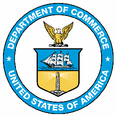
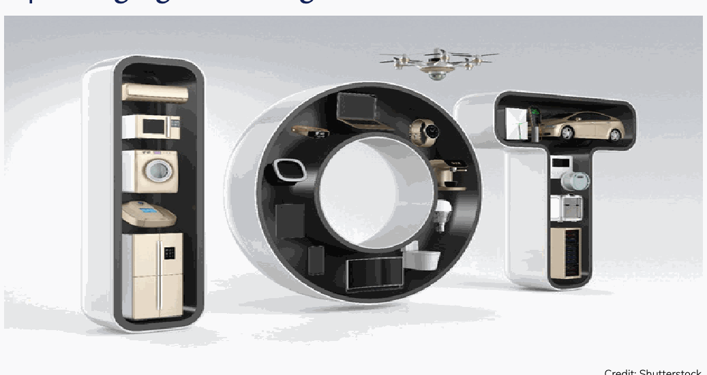

NIST Special Publication · PDF 原文抽出
2020 Cybersecurity and Privacy Annual Report
2020年 サイバーセキュリティ・プライバシー年次報告書
NIST SP 800-214（2020 Cybersecurity and Privacy Annual Report）の英文と日本語訳を段落ごとに並べた閲覧用ページです。NIST情報技術研究所（ITL）のサイバーセキュリティおよびプライバシー分野における2020年の主な研究活動と成果をまとめます。 翻訳は非公式です。要件の確認にはNIST の正式版 PDFを参照してください。
PDF から抽出した原文は原本との照合待ちです。
PDF p.37を原本画像で確認。NISTロゴと所属表示のみの裏表紙で、本文段落はなく独立した翻訳ブロックなし。
PDF p.8: SP 800-63Aの書名が文字間隔の抽出誤りで“Proo ing”となっていたため、図版照合と公式書名に基づき“Proofing”へ修正しました。
Cybersecurity and
サイバーセキュリティと
未レビュー訳Privacy Annual Report
プライバシー年次報告書
未レビュー訳青い回路とデジタル技術を抽象的に描いた表紙画像。図中に文字はない。
2020
2020年
未レビュー訳NIST SPECIAL PUBLICATION 800-214
NIST特別刊行物800-214
未レビュー訳2020 Cybersecurity and Privacy Annual Report
2020年サイバーセキュリティとプライバシー年次報告書
未レビュー訳PATRICK O’REILLY, EDITOR
編集者：Patrick O’Reilly
未レビュー訳KRISTINA RIGOPOULOS, EDITOR
編集者：Kristina Rigopoulos
未レビュー訳Computer Security Division
コンピュータセキュリティ部門
未レビュー訳Applied Cybersecurity Division
応用サイバーセキュリティ部門
未レビュー訳Information Technology Laboratory
情報技術研究所
未レビュー訳Information Technology Laboratory
情報技術研究所
未レビュー訳CO-EDITORS:
共同編集者：
未レビュー訳Larry Feldman Greg Witte Huntington Ingalls Industries Annapolis Junction, Maryland
Larry Feldman Greg Witte Huntington Ingalls Industries 米国メリーランド州アナポリス・ジャンクション
未レビュー訳THIS PUBLICATION IS AVAILABLE FREE OF CHARGE FROM
本刊行物は以下から無料で入手できます
未レビュー訳https://doi.org/10.6028/NIST.SP.800-214
https://doi.org/10.6028/NIST.SP.800-214
未レビュー訳SEPTEMBER 2021
2021年9月
未レビュー訳
米国商務省の円形紋章。外周に「DEPARTMENT OF COMMERCE」「UNITED STATES OF AMERICA」の文字があり、内側に鷲、帆船、灯台を描く。
U.S. DEPARTMENT OF COMMERCE Gina M. Raimondo, Secretary
米国商務省 Gina M. Raimondo 長官
未レビュー訳NATIONAL INSTITUTE OF STANDARDS AND TECHNOLOGY James K. Olthoff, Performing the Non-Exclusive Functions and Duties of the Under Secretary of Commerce for Standards and Technology & Director, National Institute of Standards and Technology
米国国立標準技術研究所 James K. Olthoff（商務省標準技術担当次官および米国国立標準技術研究所長の非専属職務・職責を代行）
未レビュー訳Table of Contents
目次
未レビュー訳Foreword — 1
序文 — 1
未レビュー訳Focus Area 1: Cybersecurity Awareness and Education — 2
重点領域1：サイバーセキュリティの意識向上と教育 — 2
未レビュー訳Focus Area 2: Identity and Access Management — 4
重点領域2：アイデンティティ管理とアクセス管理 — 4
未レビュー訳Focus Area 3: Metrics and Measurement — 7
重点領域3：指標と測定 — 7
未レビュー訳Focus Area 4: Risk Management — 10
重点領域4：リスクマネジメント — 10
未レビュー訳Focus Area 5: Privacy Engineering — 14
重点領域5：プライバシーエンジニアリング — 14
未レビュー訳Focus Area 6: Emerging Technologies — 16
重点領域6：新興技術 — 16
未レビュー訳Focus Area 7: Cryptographic Standards and Validation — 19
重点領域7：暗号標準と検証 — 19
未レビュー訳Focus Area 8: Trustworthy Networks — 23
重点領域8：信頼できるネットワーク — 23
未レビュー訳Focus Area 9: Trustworthy Platforms — 27
重点領域9：信頼できるプラットフォーム — 27
未レビュー訳ITL Leadership and Participation in National and International Standards Programs — 30
ITLによる国内および国際標準化プログラムへのリーダーシップと参加 — 30
未レビュー訳Opportunities to Engage with the NIST Cybersecurity & Privacy Program — 31
NISTサイバーセキュリティ・プライバシープログラムへの参加機会 — 31
未レビュー訳Foreword
序文
未レビュー訳With each day bringing new cybersecurity and privacy challenges and advances, it is little wonder that many leaders feel as if they have been cast in the role of the Red Queen in Lewis Carroll’s “Through the Looking-Glass.” In that classic, the Queen tells Alice: "Now, here, you see, it takes all the running you can do to keep in the same place. If you want to get somewhere else, you must run at least twice as fast as that!"
サイバーセキュリティとプライバシーをめぐる課題や技術の進歩が日々続くなか、多くのリーダーがルイス・キャロルの『鏡の国のアリス』に登場する赤の女王の役回りを演じているように感じるのも無理はないでしょう。物語の中で女王はアリスにこう言います。「ここでは、同じ場所にとどまるだけでも、全力で走らなければならないのよ。別の場所へ行きたいのなら、その少なくとも二倍の速さで走らなくては！」
未レビュー訳It is true that leaders need to be nimble and move quickly to avoid the consequences of cybersecurity and privacy attacks that threaten their enterprises. That need extends to government agencies, like NIST, that are trying to help meet those urgent challenges.
企業を脅かすサイバーセキュリティ攻撃やプライバシー侵害の影響を避けるには、リーダーが機敏に、迅速に行動する必要があります。こうした必要性は、差し迫った課題への対応を支援しようとしているNISTのような政府機関にも当てはまります。
未レビュー訳At NIST, we know that – in addition to current needs – we also have a responsibility to keep an eye on the horizon, anticipating technology changes, threat environments, and cultural shifts that could affect the ability of organizations to manage cybersecurity and privacy risks.
NISTでは、現在のニーズに応えるだけでなく、組織のサイバーセキュリティとプライバシーリスク管理に影響し得る技術の変化、脅威環境、社会の変化を先読みし、将来を見据える責任もあると認識しています。
未レビュー訳We've successfully carried out our work for nearly 50 years precisely because we not only address near-term challenges but also spend time thinking, exploring, listening, and speaking with others about the really big issues in store for all of us. We tackle current issues, but we also play the long game – the infinite game, if you will. We are mindful of the reality that cybersecurity and privacy challenges are evolving. At NIST, we make it our business to help others be prepared by anticipating needs and creating opportunities. We anchor our decisions with our feet firmly planted in both the present and the future. As you read this report about our efforts and accomplishments in 2020, you will understand how we have been addressing both short-term and long-term needs.
私たちが約50年にわたり成果を上げてきたのは、目の前の課題に対処するだけでなく、これから皆が直面する大きな課題について考え、探究し、耳を傾け、他者と語り合う時間を設けてきたからです。現在の課題に取り組む一方で、長期戦、いわば終わりのないゲームも見据えています。サイバーセキュリティとプライバシーをめぐる課題が進化し続けていることを、私たちはよく理解しています。NISTの役割は、ニーズを予測し機会をつくることで、他者が備えられるよう支援することです。私たちは現在と未来の双方に足場を置いて意思決定します。2020年の取り組みと成果をまとめた本報告書を読めば、短期と長期の両方のニーズにどう応えてきたかが分かるでしょう。
未レビュー訳For example, in the cryptographic arena, we are not only providing and improving practical tools and services for today, we also are rapidly moving forward to ensure that Post-Quantum Cryptography standards are ready when quantum computing becomes a real threat to the protective algorithms that we all take for granted. We have been integrating privacy considerations into the basic control suites that so many organizations rely on now, and we are widening our privacy focus to encompass the broader privacy concerns that arise as mobile computing, e-commerce, and the Internet of Things advance. The intentional addition of the word “privacy” in this report’s title reflects changing technological capabilities and society’s expectations.
例えば暗号分野では、今日使える実用的なツールやサービスを提供・改善するだけでなく、量子コンピューティングが、誰もが当然のものとして頼っている保護アルゴリズムへの現実の脅威となるときに備え、耐量子計算機暗号（PQC）標準の策定も急速に進めています。多くの組織が現在利用する基本的な管理策一式にプライバシーの考慮事項を組み込むとともに、モバイルコンピューティング、電子商取引、モノのインターネットの発展に伴う幅広いプライバシー上の懸念へと対象を広げています。本報告書のタイトルに「プライバシー」という語を加えたのは、技術能力と社会の期待が変化していることを反映しています。
未レビュー訳This year’s annual report is grouped into nine priority areas for NIST, with most – but not all – of the work being conducted by our Information Technology Laboratory (ITL) and in close collaboration with the private and public sectors. While these represent areas that NIST believes merit the bulk of our attention for the foreseeable future, the report also includes other specific projects of importance that do not fit neatly into these buckets.
今年の年次報告書では、NISTの優先領域を九つに分けています。その大半の取り組みは情報技術研究所（ITL）が担い、官民双方と緊密に連携して進めています。これらは近い将来にNISTが注力すべきと考える領域ですが、本報告書にはこの分類に収まらない重要な個別プロジェクトも含まれています。
未レビュー訳All of this work adds up to cultivating trust in information, systems, and technologies. That’s our charge. That’s our reason for being. I encourage you to review our recent progress and to help us look well beyond the here-and-now of technology, cybersecurity, and privacy; this will enable all of us to meet the future with confidence that we can manage the emerging risks and change the world for the better for the next 50 years.
これらすべての取り組みは、情報、システム、技術への信頼を育むことにつながります。それが私たちの責務であり、存在理由です。最近の進捗を確認し、技術、サイバーセキュリティ、プライバシーの「今」だけでなく、その先まで見据えることに力を貸してください。そうすれば、台頭するリスクに対処し、今後50年にわたって世界をより良く変えていけるという自信をもって、皆で未来に臨むことができます。
未レビュー訳Kevin Stine
Kevin Stine
未レビュー訳NIST Chief Cybersecurity Advisor
NISTサイバーセキュリティ首席顧問
未レビュー訳NIST CYBERSECURITY & PRIVACY ANNUAL REPORT - FY2020
NISTサイバーセキュリティ・プライバシー年次報告書 — 2020会計年度
未レビュー訳1 | Cybersecurity Awareness and Education
1｜サイバーセキュリティの意識向上と教育
未レビュー訳Credit: Shutterstock
画像提供：Shutterstock
未レビュー訳NIST continues to coordinate a National Cybersecurity Awareness and Education Program that includes activities such as the widespread dissemination of cybersecurity technical standards and best practices; efforts to make cybersecurity best practices usable by a variety of individuals and stakeholders; increasing public awareness of cybersecurity, cyber safety, and cyber ethics; increasing the understanding of the benefits of ensuring effective risk management of information technology and the methods to mitigate and to remediate vulnerabilities; supporting formal cybersecurity education programs at all levels to prepare and improve a skilled cybersecurity workforce; and promoting initiatives to evaluate and forecast future cybersecurity workforce needs of the Federal Government and develop strategies for recruitment, training, and retention.
NISTは、全国的なサイバーセキュリティ意識向上・教育プログラムの調整を引き続き担っています。このプログラムには、サイバーセキュリティの技術標準とベストプラクティスの広範な普及、さまざまな個人や関係者がベストプラクティスを活用できるようにする取り組み、サイバーセキュリティ・サイバー安全・サイバー倫理に関する社会の認知向上、情報技術の効果的なリスクマネジメントの利点と脆弱性の軽減・修正方法への理解促進、あらゆる段階の正式なサイバーセキュリティ教育プログラムを支援して熟練人材を育成・強化する活動、連邦政府の将来のサイバーセキュリティ人材需要を評価・予測し、採用・訓練・定着の戦略を策定する取り組みが含まれます。
未レビュー訳National Initiative for Cybersecurity Education
サイバーセキュリティ教育国家イニシアチブ（NICE）
未レビュー訳The National Initiative for Cybersecurity Education (NICE) is a partnership among government, academia, and the private sector. NICE is focused on cybersecurity education, training, and workforce development. NIST's leadership of the program helps position it to support the country’s ability to address current and future cybersecurity challenges through standards and best practices.
サイバーセキュリティ教育国家イニシアチブ（NICE）は、政府、学術界、民間部門が連携するパートナーシップです。サイバーセキュリティの教育、訓練、人材育成に重点を置いています。NISTが主導することで、標準とベストプラクティスを通じ、現在および将来のサイバーセキュリティ課題に対処する国の能力を支援しています。
未レビュー訳NICE's mission is to energize and promote a robust network and ecosystem of cybersecurity education, training, and workforce development. This mission supports the vision of helping to secure the nation by increasing the number of skilled cybersecurity professionals.
NICEの使命は、サイバーセキュリティ教育、訓練、人材育成の強固なネットワークとエコシステムを活性化し、発展させることです。この使命は、熟練したサイバーセキュリティ専門家を増やして国の安全を高めるというビジョンを支えます。
未レビュー訳NIST CYBERSECURITY & PRIVACY ANNUAL REPORT - FY2020
NISTサイバーセキュリティ・プライバシー年次報告書 — 2020会計年度
未レビュー訳In Fiscal Year (FY) 2020, the National Initiative for Cybersecurity Education (NICE) finalized two publications. The first, NIST Interagency or Internal Report (NISTIR) 8287, A Roadmap for Successful Regional Alliances and Multistakeholder Partnerships to Build the Cybersecurity Workforce, provides a summary of how to create ecosystems and partnerships to stimulate cybersecurity education and workforce development.
2020会計年度、サイバーセキュリティ教育国家イニシアチブ（NICE）は二つの刊行物を完成させました。一つ目のNIST省庁間・内部報告書（NISTIR）8287『サイバーセキュリティ人材育成に向けた地域連携とマルチステークホルダーパートナーシップの成功ロードマップ』は、サイバーセキュリティ教育と人材育成を促進するエコシステムや連携体制の構築方法を要約しています。
未レビュー訳The second, NIST Special Publication (SP) 1500-16, Improving Veteran Transitions to Civilian Cybersecurity Roles: Workshop Report, presents the findings and recommendations from a workshop on how to help transitioning military members discover opportunities in the cybersecurity workforce.
二つ目のNIST特別刊行物（SP）1500-16『退役軍人の民間サイバーセキュリティ職への移行改善：ワークショップ報告書』は、軍務から民間へ移る人々がサイバーセキュリティ人材市場の機会を見つける支援方法を扱ったワークショップの成果と提言をまとめています。
未レビュー訳NICE also curated a webpage for free and low-cost online cybersecurity learning content. At a time when many are transitioning to remote learning or considering a job or career change, this resource provided links to training courses, labs, and curriculum for the purposes of progressing toward new skills or credentials in cybersecurity.
NICEは、無料または低価格で利用できるオンラインサイバーセキュリティ学習コンテンツのウェブページも編集・公開しました。多くの人が遠隔学習へ移行したり、仕事やキャリアの変更を検討したりする時期に、このリソースは新たな技能や資格の習得に役立つ講座、実習環境、カリキュラムへのリンクを提供しました。
未レビュー訳NICE hosted several events in FY 2020. In addition to monthly webinars, NICE held two annual conferences – the NICE Conference and Expo in Phoenix, Arizona, which had more than 800 registrants; and the NICE K12 Cybersecurity Education Conference in Garden Grove, California, which had more than 450 registrants. NICE also conducted a workshop on Use Cases for the NICE Framework and the annual National Cybersecurity Career Awareness Week where organizations from around the world held virtual and in-person events to help inspire and promote awareness and exploration of cybersecurity careers.
NICEは2020会計年度に複数のイベントを開催しました。毎月のウェビナーに加え、年次会議を二つ実施しました。アリゾナ州フェニックスで開かれたNICE Conference and Expoには800人を超える登録者が参加し、カリフォルニア州ガーデングローブで開かれたNICE K12 Cybersecurity Education Conferenceには450人を超える登録者がありました。また、NICE Frameworkのユースケースに関するワークショップと、毎年恒例の全国サイバーセキュリティ・キャリア啓発週間も実施しました。世界各地の組織がオンラインおよび対面イベントを開催し、サイバーセキュリティ職への関心と理解を促しました。
未レビュー訳Advancing Cybersecurity Usability
サイバーセキュリティの使いやすさの向上
未レビュー訳NIST has popularized the “Phish Scale” as a method to better characterize an organization’s phishing risk. The scale considers phishing cues and user context to help Chief Information Security Officers and phishing training implementers rate the difficulty of their organizations’ phishing exercises and explain associated click rates. NIST’s Video and Digital Media Production Group created a video for the Phish Scale, and research results were published in the Journal of Cybersecurity and highlighted in a NIST article that garnered media attention across industry, government, and academia.
NISTは、組織のフィッシングリスクをより適切に特徴付ける方法として「フィッシング・スケール」を普及させました。この尺度は、フィッシングの手掛かりと利用者の状況を考慮し、最高情報セキュリティ責任者（CISO）やフィッシング訓練の実施者が、組織内訓練の難易度を評価し、リンクのクリック率を説明するのに役立ちます。NISTの映像・デジタルメディア制作グループはフィッシング・スケールの紹介動画を作成しました。研究成果は『Journal of Cybersecurity』に掲載され、産業界、政府、学術界で注目されたNISTの記事でも紹介されました。
未レビュー訳NIST also completed an in-depth interview study to understand consumers’ challenges, perceptions, and experiences related to smart home security and privacy. The results of the study inform the Internet of Things (IoT) security and privacy guidelines by identifying current gaps in users’ experiences and suggesting how smart home devices might be designed to better integrate usability, privacy, and security. The capstone paper describing the results will be published in the proceedings of the 2021 USENIX Security Symposium.
NISTは、スマートホームのセキュリティとプライバシーに関する消費者の課題、認識、経験を把握するため、詳細な聞き取り調査も完了しました。調査結果は、利用者の経験における現在の不足を特定し、使いやすさ、プライバシー、セキュリティをより統合できるスマートホーム機器の設計方法を示すことで、モノのインターネット（IoT）のセキュリティ・プライバシーガイドラインに役立ちます。成果をまとめた主要論文は、2021年USENIX Security Symposiumの会議録に掲載予定です。
未レビュー訳Small Business Cybersecurity Corner
中小企業向けサイバーセキュリティ情報コーナー
未レビュー訳In FY 2020, the Small Business Cybersecurity Corner website organization and design were updated based on the results of a usability study conducted by a set of small business owners.
2020会計年度、中小企業向けサイバーセキュリティ情報コーナーのウェブサイトは、中小企業経営者グループが実施したユーザビリティ調査の結果に基づき、構成とデザインを更新しました。
未レビュー訳In addition to facilitating access to many popular small business security resources, the language of the site was updated to be more accessible and relatable to the small business community. Training materials and accompanying resources continue to be expanded based on cybersecurity resources and feedback received from NIST’s federal partners and the public.
広く利用される中小企業向けセキュリティリソースへのアクセスを容易にしただけでなく、サイトの表現も、中小企業の人々にとって分かりやすく親しみやすいものに改めました。NISTの連邦パートナーや一般から寄せられるサイバーセキュリティ関連情報と意見を踏まえ、訓練教材と関連リソースも引き続き拡充しています。
未レビュー訳NIST CYBERSECURITY & PRIVACY ANNUAL REPORT - FY2020
NISTサイバーセキュリティ・プライバシー年次報告書 — 2020会計年度
未レビュー訳2 | Identity and Access Management
2｜アイデンティティ管理とアクセス管理
未レビュー訳利用者のアイコンと錠前を表示したノートPCを複数の手が囲み、本人確認とアクセス制御を表すイラスト。画像内に文字はない。
Credit: Shutterstock
画像提供：Shutterstock
未レビュー訳Identity and Access Management (IdAM) is a fundamental and critical cybersecurity capability to ensure that the right people have the appropriate access to the proper resources at the right time. To advance the state of identity and access management, NIST:
アイデンティティ管理とアクセス管理（IdAM）は、適切な人が適切な時点で適切なリソースに適切な権限でアクセスできるようにする、基礎的かつ重要なサイバーセキュリティ能力です。アイデンティティ管理とアクセス管理を前進させるため、NISTは次の活動を行っています。
未レビュー訳•Conducts focused research to better understand new and emerging technologies, impacts on existing standards, and ways to implement IdAM solutions;
•新興技術と既存標準への影響、IdAMソリューションの実装方法を深く理解するため、重点的な研究を実施する。
未レビュー訳•Leads in the development of national and international IdAM standards, guidance, best practices, profiles, and frameworks to create an enhanced, interoperable suite of secure, privacy-enhancing solutions;
•安全でプライバシーを強化する相互運用可能なソリューション群を構築するため、国内外のIdAM標準、ガイダンス、ベストプラクティス、プロファイル、フレームワークの策定を主導する。
未レビュー訳•Evolves its IdAM standards, guidelines, and resources; and
•IdAMの標準、ガイドライン、リソースを発展させる。
未レビュー訳•Produces example solutions that bring together the IdAM requirements needed to address specific business cybersecurity challenges.
•特定の事業上のサイバーセキュリティ課題に対応するために必要なIdAM要件をまとめた実装例を作成する。
未レビュー訳IdAM is an important component of cloud computing security, and NIST publishes access control characteristics and general access control guidelines for various cloud service models. NIST also performs research and development regarding access control rules and methods.
IdAMはクラウドコンピューティングのセキュリティにおける重要な要素です。NISTは、さまざまなクラウドサービスモデル向けにアクセス制御の特性と一般的なガイドラインを公開しています。また、アクセス制御の規則と手法について研究開発も行っています。
未レビュー訳Personal Identity Verification (PIV)
個人識別検証（PIV）
未レビュー訳As required by Homeland Security Presidential Directive 12, NIST developed and maintains the Federal Information Processing Standard (FIPS) for personal identity verification (PIV) of federal employees and contractors (FIPS 201). In FY 2019, NIST initiated a revision of FIPS 201 to incorporate changing business requirements of federal departments and agencies and to adapt to an evolving technology environment. The revision also helps users to align with Office of Management and Budget (OMB) Policy Memorandum M-19-17. Revision activities began in FY 2019 with a business requirement meeting to engage with federal stakeholders about the revision goals. In FY 2020, the PIV team updated the draft standard based on the revision goals
国土安全保障大統領指令第12号に従い、NISTは連邦政府職員と請負業者の個人識別検証（PIV）に関する連邦情報処理標準（FIPS 201）を策定し、維持しています。2019会計年度、NISTは連邦省庁の変化する事業要件を取り込み、進化する技術環境に適応するため、FIPS 201の改訂に着手しました。この改訂は、行政管理予算局（OMB）の政策覚書M-19-17との整合にも役立ちます。改訂作業は2019会計年度に始まり、改訂目標について連邦関係者と協議する事業要件会合を開催しました。2020会計年度、PIVチームは改訂目標に基づいて標準草案を更新し、
未レビュー訳NIST CYBERSECURITY & PRIVACY ANNUAL REPORT - FY2020
NISTサイバーセキュリティ・プライバシー年次報告書 — 2020会計年度
未レビュー訳and published public draft FIPS 201-3. The draft standard expands the set of PIV authenticators beyond the current practices (including the current smart card form factor) while addressing interagency use of new types of PIV authenticators (i.e., derived PIV credentials) via federation. The revision also aims to facilitate the issuance of PIV cards by enabling remote identity proofing. These changes closely align with M-19-17. For FY 2021, the PIV team will actively work on resolving comments on the public draft while continuing outreach to federal stakeholders.
公開草案FIPS 201-3を公表しました。この草案では、現行のスマートカード形式を含む従来の実務を超えてPIV認証器の種類を拡大し、連携を通じた新しい種類のPIV認証器（すなわち派生PIV資格情報）の省庁間利用に対応しています。また、遠隔本人確認を可能にすることで、PIVカード発行を円滑にすることを目指しています。これらの変更はM-19-17と密接に整合しています。2021会計年度、PIVチームは公開草案へのコメント対応を進めながら、連邦関係者への働きかけを続ける予定です。
未レビュー訳Digital Identity Guidelines
デジタルIDガイドライン
未レビュー訳The four-volume set of NIST SP 800-63-3, Digital Identity Guidelines, was published in June 2017. Following three years of federal agency experience implementing the controls and requirements and to help stay ahead of potential online identity attacks, the Information Technology Laboratory (ITL) decided to revise and update all volumes of SP 800-63-3.
4巻構成のNIST SP 800-63-3『デジタルIDガイドライン』は2017年6月に公表されました。連邦機関が管理策と要件を3年間実施した経験を踏まえ、またオンラインID攻撃の先を見越すため、情報技術研究所（ITL）はSP 800-63-3の全巻を改訂・更新することを決定しました。
未レビュー訳NIST ITL published the pre-draft Request for Comments for the revision of SP 800-63-3 on June 8, 2020. The Request for Comments identified nine topics for potential update. Additionally, NIST ITL provided numerous virtual conferences and presentations on the targeted topics for potential revision and other aspects of the Digital Identity Guidelines to improve and focus the development and submission of comments. More than 40 federal agencies and industry organizations responded with over 300 comments. ITL published a public roadmap for key activities, milestones, and target dates for the development of SP 800-63, Revision 4, and published all comments received by the comment closing date. As indicated in the roadmap, ITL plans to complete adjudication of comments received in the first quarter of FY 2021 and will post issues for potential revision on GitHub in the second quarter.
NIST ITLは2020年6月8日、SP 800-63-3改訂に向けた事前草案の意見募集を公表しました。意見募集では、更新候補として九つの論点を示しました。また、改訂候補の論点やデジタルIDガイドラインの他の側面について、仮想会議や説明会を多数開催し、意見の作成と提出を促しました。連邦機関と業界団体40以上から300件を超えるコメントが寄せられました。ITLはSP 800-63改訂第4版の策定に向けた主要活動、節目、目標日を示す公開ロードマップを公表し、募集締切までに寄せられたコメントもすべて公開しました。ロードマップに記載したとおり、ITLは2021会計年度第1四半期にコメントへの裁定を完了し、第2四半期に改訂候補の課題をGitHubで公開する予定です。
未レビュー訳Implementation Resources for NIST SP 800-63, Digital Identity Guidelines
NIST SP 800-63『デジタルIDガイドライン』の実装リソース
未レビュー訳In June 2020, NIST ITL published resources for applying NIST SP 800-63. Based on requests from federal agencies and industry and on recommendations from the U.S. General Accountability Office (GAO), NIST developed and published materials to provide non-normative guidance for the implementation of SP 800-63A, Enrollment and Identity Proofing; SP 800-63B, Authentication and Lifecycle Management; and SP 800-63C, Federation and Assertions. The guidance addresses key topics and aspects of each volume to facilitate the understanding and implementation of the requirements for all assurance levels. ITL presented information for federal agencies and industry to promote the use of the implementation resources and discuss key topics, requirements, and controls and how to properly implement them.
2020年6月、NIST ITLはNIST SP 800-63を適用するためのリソースを公表しました。連邦機関や業界からの要望、および米国政府説明責任院（GAO）の提言を受け、SP 800-63A『登録と本人確認』、SP 800-63B『認証とライフサイクル管理』、SP 800-63C『連携とアサーション』の実装に関する非規範的なガイダンス資料を作成・公表しました。このガイダンスは、すべての保証レベルの要件を理解し実装しやすくするため、各巻の主要な論点と側面を扱います。ITLは連邦機関と業界に内容を説明し、実装リソースの利用を促すとともに、主要な論点、要件、管理策と適切な実装方法について議論しました。
未レビュー訳Conformance Criteria for NIST SP 800-63A and 800-63B
NIST SP 800-63Aおよび800-63Bの適合基準
未レビュー訳OMB Policy Memorandum M-19-17 updated federal identity, credentials, and access management policy and provided direction for federal agencies to enhance associated capabilities. The OMB Policy Memo assigned NIST the responsibility for developing conformance criteria for accreditation of products and services to meet the designated levels of assurance in SP 800-63-3. In response, NIST ITL developed the criteria for NIST SPs 800-63A and 800-63B.
OMB政策覚書M-19-17は連邦政府のアイデンティティ、資格情報、アクセス管理方針を更新し、関連能力を強化するよう連邦機関に指示しました。同覚書は、SP 800-63-3の指定保証レベルを満たす製品・サービスの認定に用いる適合基準を策定する責任をNISTに割り当てました。これを受け、NIST ITLはNIST SP 800-63Aおよび800-63Bの基準を策定しました。
未レビュー訳NIST CYBERSECURITY & PRIVACY ANNUAL REPORT - FY2020
NISTサイバーセキュリティ・プライバシー年次報告書 — 2020会計年度
未レビュー訳The conformance criteria present all normative requirements and controls of SP 800-63-3 by designated assurance level, the control objectives for each criterion, recommended methods for determining conformity, and supplemental guidance to assist implementers and assessors. The criteria are intended for federal agencies and industry service providers for the implementation of SP 800-63-3 and for conducting conformance and security assessments under the Federal Information Security Modernization Act (FISMA). NIST provided virtual conferences and presentations to explain how to apply and use the conformance criteria for implementation and conformance assessment. Multiple federal agencies and industry organizations have developed programs to incorporate the conformance criteria and take advantage of the guidance and tools presented in the document.
適合基準は、SP 800-63-3のすべての規範要件と管理策を保証レベルごとに示すほか、各基準の管理目的、適合性を判定する推奨方法、実装者と評価者を支援する補足ガイダンスをまとめています。これらの基準は、連邦機関および業界のサービスプロバイダーがSP 800-63-3を実装し、連邦情報セキュリティ近代化法（FISMA）に基づく適合性評価とセキュリティ評価を実施するためのものです。NISTは、実装と適合性評価で基準を適用・活用する方法を説明するオンライン会議や発表を行いました。複数の連邦機関や業界団体が、基準と文書のガイダンス・ツールを活用するプログラムを策定しています。
未レビュー訳Access Control System Guidance and Research for Cloud Systems
クラウドシステム向けアクセス制御システムのガイダンスと研究
未レビュー訳NIST developed SP 800-210, General Access Control Guide for Cloud Systems, to present cloud access control characteristics and general access control guidance for cloud service models: IaaS (Infrastructure as a Service), PaaS (Platform as a Service), and SaaS (Software as a Service). The main focus is on the technical aspects of access control without considering deployment models (e.g., public, private, hybrid clouds). It also focuses on trust and risk management issues, which require different layers of discussions that depend on the security requirements of the business function or the organization of deployment for which the cloud system is implemented. NIST researched emerging technologies that can be applied to access control mechanisms, such as the Natural Language Processing algorithm to automatically generate access control policy from natural language documentation. Currently, studies of experiment tools, user cases, and language features are the focus of the research work.
NISTは、クラウドサービスモデルであるIaaS（サービスとしてのインフラストラクチャ）、PaaS（サービスとしてのプラットフォーム）、SaaS（サービスとしてのソフトウェア）におけるアクセス制御の特性と一般的なガイダンスを示すため、SP 800-210『クラウドシステム向け一般アクセス制御ガイド』を作成しました。主な焦点は、パブリック、プライベート、ハイブリッドなどの導入モデルではなく、アクセス制御の技術的側面です。また、クラウドシステムを実装する事業機能や組織のセキュリティ要件に応じて異なる層での検討が必要となる、信頼とリスクマネジメントの課題も扱っています。NISTは、自然言語の文書からアクセス制御ポリシーを自動生成する自然言語処理アルゴリズムなど、アクセス制御メカニズムに応用できる新興技術を研究しました。現在の研究では、実験用ツール、利用事例、言語上の特徴を検討しています。
未レビュー訳Access Control Policy Verification and Development Tools
アクセス制御ポリシーの検証・開発ツール
未レビュー訳Access control systems are among the most critical network security components. Faulty policies, misconfiguration, or flaws in software implementation can result in serious vulnerabilities. To address these issues, NIST developed and is improving the Access Control Policy Tool (ACPT), which allows a user to compose, verify, test, and generate access control policies. New user-interface features have been added to the improved version of ACPT. NIST has also developed the Access Control Rule Logic Circuit (ACRLC) simulation technique, which enables access control policy authors to detect a fault when the fault-causing access control rule is added to the policy. This notification allows a fix to be implemented in real time before adding other rules that further complicate the detecting effort.
アクセス制御システムは、ネットワークセキュリティを支える最も重要な要素の一つです。不適切なポリシー、設定ミス、ソフトウェア実装の欠陥は深刻な脆弱性につながる可能性があります。NISTはこうした問題に対処するため、利用者がアクセス制御ポリシーを作成、検証、試験、生成できるアクセス制御ポリシーツール（ACPT）を開発し、改良を続けています。改良版には新しいユーザーインターフェース機能が追加されました。また、アクセス制御規則論理回路（ACRLC）シミュレーション技法も開発しました。この技法により、障害の原因となるアクセス制御規則がポリシーに追加された時点で、ポリシー作成者が障害を検出できます。この通知によって、その後に他の規則を追加して原因特定がさらに難しくなる前に、リアルタイムで修正できます。
未レビュー訳In addition to software simulation, NIST worked on hardware implementation of ACRLC with the University of Arkansas Computer Science Department. The hardware version of ACRLC enables the study of performance and real-world applications. NIST also researched theories for applying quantum algorithms to limited access control systems (such as IoT devices). The research results are presented in the paper Apply Quantum Search to the Safety Check for Mono Operational Attribute Based Protection Systems, which will be published in the international Conference on Security, Privacy, and Anonymity in Computation, Communication, and Storage.
ソフトウェアシミュレーションに加え、NISTはアーカンソー大学コンピュータ科学部門とACRLCのハードウェア実装にも取り組みました。ハードウェア版ACRLCによって、性能と実環境での適用を研究できます。また、IoTデバイスなどアクセスが制限されたシステムに量子アルゴリズムを適用する理論も研究しました。成果は「Apply Quantum Search to the Safety Check for Mono Operational Attribute Based Protection Systems」という論文にまとめられ、国際会議「Security, Privacy, and Anonymity in Computation, Communication, and Storage」で発表予定です。
未レビュー訳NIST CYBERSECURITY & PRIVACY ANNUAL REPORT - FY2020
NISTサイバーセキュリティ・プライバシー年次報告書 — 2020会計年度
未レビュー訳3 | Metrics and Measurement
3｜指標と測定
未レビュー訳KPIと表示された画面、円グラフ・棒グラフ、測定計器、虫眼鏡、目標、上昇矢印を組み合わせた指標のイラスト。
Credit: Shutterstock
画像提供：Shutterstock
未レビュー訳Cybersecurity Metrics provide decision support, and they help to measure and improve performance and accountability for cybersecurity activities. A mature metrics program is content-rich, supports a broader range of stakeholders, and provides greater value to the organization. More precise measurement data helps to focus on an actionable approach to improving cybersecurity. To support this effort, NIST has embarked on various initiatives, some of which are highlighted here. Initiatives include research in new technology areas, risk management tools and guidance, and ways for organizations to mature the use of cybersecurity metrics.
サイバーセキュリティ指標は意思決定を支援し、サイバーセキュリティ活動の実績と説明責任を測定・改善するのに役立ちます。成熟した指標プログラムは豊富な内容を備え、幅広い関係者を支援し、組織により大きな価値をもたらします。より精密な測定データにより、実行可能なサイバーセキュリティ改善策に焦点を当てやすくなります。この取り組みを支援するため、NISTは新技術分野の研究、リスクマネジメントツールとガイダンス、組織がサイバーセキュリティ指標の活用を成熟させる方法など、複数の施策に着手しました。
未レビュー訳Measurements for Information Security
情報セキュリティの測定
未レビュー訳Every organization wants to gain maximum value and effect for its finite cybersecurity-related investments. This includes managing risk to the enterprise and optimizing the potential reward of cybersecurity policies, programs, and actions. Organizations frequently make decisions by comparing scenarios of various projected costs with potential associated benefits and risk reduction. Senior executives need accurate and quantitative methods to portray and assess these factors, their effectiveness and efficiency, and their effect on risk exposure. Providing reliable answers to these questions requires organizations to employ a systematic approach to cybersecurity measurement that considers current knowledge limits.
すべての組織は、限られたサイバーセキュリティ関連投資から最大の価値と効果を得たいと考えています。これには、企業全体のリスク管理と、サイバーセキュリティ方針、プログラム、活動がもたらす潜在的な利益の最適化が含まれます。組織は、予測コストと見込まれる便益やリスク軽減を複数のシナリオで比較し、意思決定することがよくあります。幹部には、こうした要因、その有効性と効率性、リスクエクスポージャーへの影響を表現し評価できる、正確で定量的な手法が必要です。これらの問いに信頼できる答えを出すには、現在の知識の限界も考慮した体系的なサイバーセキュリティ測定のアプローチが必要です。
未レビュー訳NIST’s cybersecurity measurements program enables organizations to manage cybersecurity risks. NIST is undertaking a focused program on cybersecurity measurements to support the development and alignment of technical measures to determine the effect of cybersecurity risks and responses on an organization’s objectives. The initiative involves collaboration with the research, business, and government sectors.
NISTのサイバーセキュリティ測定プログラムは、組織によるサイバーセキュリティリスク管理を可能にします。NISTは、組織目標に対するサイバーセキュリティリスクと対応の影響を判断する技術的な測定方法の開発と整合を支援するため、重点プログラムに取り組んでいます。この取り組みには研究、ビジネス、政府各分野との連携が含まれます。
未レビュー訳NIST CYBERSECURITY & PRIVACY ANNUAL REPORT - FY2020
NISTサイバーセキュリティ・プライバシー年次報告書 — 2020会計年度
未レビュー訳In FY 2020, NIST issued a request for public comments on NIST SP 800-55, Revision 1, Performance Measurement Guide for Information Security. NIST also created a website to aggregate guidelines, tools, research, and resources for improving the quality and utility of information to support decision making.
2020会計年度、NISTはNIST SP 800-55改訂第1版『情報セキュリティのパフォーマンス測定ガイド』について、一般からの意見募集を行いました。また、意思決定を支援する情報の質と有用性を高めるため、ガイドライン、ツール、研究、リソースを集約するウェブサイトを作成しました。
未レビュー訳Cyber Risk Analytics
サイバーリスク分析
未レビュー訳This project promotes technical solutions that enable organizations to bridge new and existing data sets to advance cyber risk analysis and enhance the ability to report trends. The goal is to facilitate information sharing among risk owners about historical, current, and future cyber risk conditions. NIST is leveraging past and present efforts such as using a data repository for cyber incident analysis, predictive analytics and strategic analysis on threat coverage, and prioritization and gap identification. In FY 2020, research involved developing a proof-of-concept sandbox for a trusted and secure repository in which enterprise risk owners can anonymously share, store, aggregate, and analyze cyber incident data. As such, initial efforts explore the enabling of capabilities such as anonymization, provenance, data enrichment, and data quality. NIST will continue to explore data analytics to improve the understanding of cybersecurity risks and inform management practices.
このプロジェクトは、新旧のデータセットを結び付け、サイバーリスク分析を進め、傾向を報告する能力を高める技術的解決策を促進します。過去、現在、将来のサイバーリスク状況について、リスク所有者間の情報共有を円滑にすることが目標です。NISTは、サイバーインシデント分析用データリポジトリ、脅威対応範囲の予測分析と戦略分析、優先順位付け、ギャップ特定など、過去および現在の取り組みを活用しています。2020会計年度には、企業のリスク所有者がサイバーインシデントデータを匿名で共有、保存、集約、分析できる、信頼性と安全性を備えたリポジトリの概念実証用サンドボックスを開発しました。初期段階では、匿名化、来歴管理、データ拡充、データ品質などを実現する能力を検討しています。NISTは、サイバーセキュリティリスクへの理解を深め、管理実務に役立てるデータ分析を引き続き探究します。
未レビュー訳Additional software assurance projects included:
その他のソフトウェア保証プロジェクトには次のものがあります。
未レビュー訳•Software Assurance Metrics and Tool Evaluation (SAMATE) improves software assurance by developing methods to enable software tool evaluation, measure the effectiveness of tools and techniques, and identify gaps in tools and methods.
•ソフトウェア保証の測定とツール評価（SAMATE）は、ソフトウェアツールの評価方法を開発し、ツールと技法の有効性を測定し、ツールや手法の不足を特定することで、ソフトウェア保証を向上させます。
未レビュー訳•The Bugs Framework (BF) provides precise definitions of software bugs and language-independent taxonomies for describing software vulnerabilities. In FY 2020, BF published models and definitions.
•バグフレームワーク（BF）は、ソフトウェアのバグを明確に定義し、ソフトウェア脆弱性を記述する言語非依存の分類体系を提供します。2020会計年度には、モデルと定義を公表しました。
未レビュー訳•Software Assurance Reference Dataset (SARD) is a large collection of programs that contain known software flaws. In FY 2020, NIST enhanced SARD with a large collection of test cases contributed by the National Security Agency's Center for Assured Software.
•ソフトウェア保証参照データセット（SARD）は、既知のソフトウェア欠陥を含むプログラムの大規模な集合です。2020会計年度、NISTは国家安全保障局（NSA）保証ソフトウェアセンターが提供した多数のテストケースを追加し、SARDを拡充しました。
未レビュー訳•Static Analysis Tool Exposition (SATE) advances research in static analysis tools to find security-relevant source code weaknesses. NIST provides reference test cases to software assessment product vendors, and those vendors return the results of their products’ analyses to NIST to help better understand how to identify and report software weaknesses.
•静的解析ツール展示会（SATE）は、セキュリティに関わるソースコードの弱点を見つける静的解析ツールの研究を推進します。NISTはソフトウェア評価製品のベンダーに参照用テストケースを提供し、各社は製品による解析結果をNISTへ返します。NISTはその結果を、ソフトウェアの弱点をより適切に特定・報告する方法の理解に役立てます。
未レビュー訳Automated Combinatorial Testing
自動組合せテスト
未レビュー訳Automated Combinatorial Testing (ACT) research focused on the application of combinatorial methods for assurance of artificial intelligence (AI) and machine learning (ML) systems. ACT developed a new method and tool for analyzing and explaining the decisions of AI/ML algorithms, presented this research to U.S. Air Force and U.S. Army researchers, and collaborated with Virginia Tech on autonomous systems assurance.
自動組合せテスト（ACT）の研究では、人工知能（AI）と機械学習（ML）システムの保証に組合せ手法を適用しました。ACTはAI/MLアルゴリズムの判断を分析・説明する新しい手法とツールを開発し、この研究を米国空軍と米国陸軍の研究者に紹介しました。また、自律システムの保証についてバージニア工科大学と共同研究しました。
未レビュー訳NIST CYBERSECURITY & PRIVACY ANNUAL REPORT - FY2020
NISTサイバーセキュリティ・プライバシー年次報告書 — 2020会計年度
未レビュー訳Computer Forensic Tool Testing
コンピュータフォレンジックツールの試験
未レビュー訳Computer Forensic Tool Testing (CFTT) is supported by the NIST Special Programs Office and the Department of Homeland Security (DHS). In FY 2020, several key advances were made to help address a critical need in the law enforcement community to ensure the reliability of computer forensic tools. CFTT tested the attributes of numerous digital forensic tools, and federated testing was developed to provide third parties with the ability to use the NIST testing methodology in their own labs and produce standardized test reports. In FY 2020, NIST upgraded the core infrastructure and added 14 published reports.
コンピュータフォレンジックツール試験（CFTT）は、NIST特別プログラム室と国土安全保障省（DHS）の支援を受けています。2020会計年度には、コンピュータフォレンジックツールの信頼性を確保するという法執行機関の重要なニーズに応えるため、いくつかの主要な進展がありました。CFTTは多数のデジタルフォレンジックツールの特性を試験しました。また、第三者が各自の試験施設でNISTの試験方法を利用し、標準化された試験報告書を作成できるよう、連携型試験方式を開発しました。2020会計年度には、中核インフラを更新し、公開報告書を14件追加しました。
未レビュー訳Computer Forensic Reference Data Sets
コンピュータフォレンジック参照データセット
未レビュー訳Computer Forensic Reference Data Sets (CFReDS) is a repository of documented sets of digital evidence. In FY 2020, the development of an improved portal began. The goal is for the CFReDS website to be a centralized portal for the forensic community to find and share datasets of interest. The Forensics Tool Catalog is a web-based, community-sourced catalog of tools aided by a taxonomy.
コンピュータフォレンジック参照データセット（CFReDS）は、文書化されたデジタル証拠セットを保管するリポジトリです。2020会計年度には、改良版ポータルの開発に着手しました。CFReDSウェブサイトを、フォレンジック関係者が関心のあるデータセットを探し、共有するための一元的なポータルにすることが目標です。Forensics Tool Catalogは、分類体系を備え、コミュニティから情報を集めるウェブベースのツールカタログです。
未レビュー訳National Software Reference Library
全米ソフトウェア参照ライブラリ
未レビュー訳The National Software Reference Library (NSRL) collects software from various sources and incorporates file profiles into a Reference Data Set (RDS) of information. The RDS can be used by members of law enforcement, government, and industry to review computer files by matching file profiles in the RDS. This helps alleviate the effort involved in determining which files are important as evidence on computers or file systems seized as part of criminal investigations. NSRL provides a research environment to promote the development of new forensic techniques and other applications in computer science. In FY 2020, the NSRL published four releases of software metadata and enlarged the collection to a combined total of 798 million files.
全米ソフトウェア参照ライブラリ（NSRL）は、さまざまな情報源からソフトウェアを収集し、ファイルプロファイルを参照データセット（RDS）に登録します。法執行機関、政府、産業界の利用者は、RDSのファイルプロファイルと照合してコンピュータファイルを確認できます。これにより、犯罪捜査で押収されたコンピュータやファイルシステム上の証拠として重要なファイルを特定する手間が軽減されます。NSRLは、コンピュータ科学における新しいフォレンジック技術やその他の応用の開発を促す研究環境も提供します。2020会計年度、NSRLはソフトウェアメタデータを年4回公開し、収集規模を合計7億9,800万ファイルに拡大しました。
未レビュー訳NIST CYBERSECURITY & PRIVACY ANNUAL REPORT - FY2020
NISTサイバーセキュリティ・プライバシー年次報告書 — 2020会計年度
未レビュー訳4 | Risk Management
4｜リスク管理
未レビュー訳青いネット状の手が「RISK」と書かれたボタンを押す図。図中の「RISK MANAGEMENT」は「リスク管理」、「Min」は「最小」を表す。
Credit: Shutterstock
クレジット：Shutterstock
未レビュー訳Throughout FY 2020, NIST has made significant progress in advancing methods and guidelines for managing enterprise risk related to cybersecurity, systems engineering, and privacy. NIST is leading a multi-year effort to produce a cohesive portfolio of complementary risk management resources that can be used individually or together to help public and private organizations better manage cybersecurity and privacy risk at all levels of the enterprise.
2020会計年度を通じて、NISTはサイバーセキュリティ、システムエンジニアリング、プライバシーに関する組織全体のリスクを管理する方法と指針の発展に大きく貢献しました。NISTは、相互に補完するリスク管理リソースの一貫したポートフォリオを作成する複数年の取り組みを主導しています。これらのリソースは個別にも組み合わせても利用でき、公共部門と民間部門の組織が、組織のあらゆるレベルでサイバーセキュリティとプライバシーのリスクをより適切に管理できるよう支援します。
未レビュー訳Risk management has been a fundamental driver for organizations for as long as there has been information to protect. Today's proliferation of risk management resources, combined with advances in technology, increasingly call for a collaborative approach to managing discipline-specific risks within the enterprise. This includes the need to ensure that managers, risk professionals, developers, and designers work together to implement secure engineering practices. These practices will help to ensure more secure systems, including those managed by external partners, and expanded risk management applications for an evolving range of products.
保護すべき情報が存在する限り、リスク管理は組織の基本的な推進要因でした。今日では、リスク管理リソースの増加と技術の進歩に伴い、組織内で分野固有のリスクを管理するための協調的な取り組みがますます求められています。そのためには、管理者、リスク専門家、開発者、設計者が協力してセキュアなエンジニアリングの実践を実装する必要があります。こうした実践により、外部パートナーが管理するものも含め、より安全なシステムを実現し、変化する幅広い製品にリスク管理を適用できるようになります。
未レビュー訳Risk Management Framework Updates
リスク管理フレームワークの更新
未レビュー訳The Risk Management Framework (RMF) is one of NIST’s most popular and widely used products. Initially created for federal agencies, organizations around the globe use the RMF because it provides a structured and flexible process for managing security and privacy risk.
リスク管理フレームワーク（RMF）は、NISTの製品の中でも特に広く利用されているものの一つです。連邦政府機関向けに当初策定されましたが、セキュリティとプライバシーのリスクを管理するための体系的かつ柔軟なプロセスを提供するため、世界中の組織で利用されています。
未レビュー訳In FY 2020, NIST published SP 800–53, Revision 5, Security and Privacy Controls for Information Systems and Organizations, which is the first and only comprehensive catalog of information security and privacy countermeasures that provide a foundation for protecting organizations, systems, and the personal privacy of individuals. The update represents a multi-year effort that supports a proactive and systematic approach to ensuring that critical systems, components, and
2020会計年度にNISTは、情報システムおよび組織のためのセキュリティとプライバシーの管理策を定めたSP 800-53改訂第5版を公開しました。これは、組織、システム、および個人のプライバシーを保護する基盤となる、情報セキュリティとプライバシー対策の包括的なカタログとして、初めてかつ唯一のものです。この改訂は、重要なシステム、構成要素、ならびに
未レビュー訳NIST CYBERSECURITY & PRIVACY ANNUAL REPORT - FY2020
NISTサイバーセキュリティ・プライバシー年次報告書 — 2020会計年度
未レビュー訳services are sufficiently trustworthy and have the necessary resilience to support organizational missions. To this end, NIST has supported public and private-sector outreach for interested stakeholders, including hosting a virtual event with over 8,500 participants.
サービスの信頼性を十分に確保し、組織の使命を支えるのに必要なレジリエンスを備えるための、複数年にわたる取り組みです。この目的に向けて、NISTは関心を持つ利害関係者に対する官民双方への周知活動を支援し、8,500人を超える参加者が集まるオンラインイベントも開催しました。
未レビュー訳The most significant changes to SP 800-53, Revision 5, include:
SP 800-53改訂第5版における主な変更点は、次のとおりです。
未レビュー訳•Making controls outcome-based
•管理策を成果ベースにする
未レビュー訳•Consolidating the control catalog to address information security, privacy, and supply chain risk management
•情報セキュリティ、プライバシー、およびサプライチェーンリスク管理に対応するため、管理策カタログを統合する
未レビュー訳•Adding state-of-the-practice controls to support cyber resiliency, secure systems design, security and privacy governance, and accountability
•サイバーレジリエンス、セキュアなシステム設計、セキュリティとプライバシーのガバナンス、および説明責任を支える、実務の最先端を反映した管理策を追加する
未レビュー訳•Transferring control baselines, including the first federal privacy control baseline, and tailoring guidance to a separate publication, NIST SP 800-53B, Control Baselines for Information Systems and Organizations
•管理策ベースライン（連邦政府初のプライバシー管理策ベースラインを含む）と調整指針を、別刊行物であるNIST SP 800-53B『情報システムおよび組織のための管理策ベースライン』へ移す
未レビュー訳Supporting the Implementation of the RMF and SP 800-53
RMFおよびSP 800-53の実装支援
未レビュー訳NIST continues to develop publications that support the implementation of the RMF steps, including Volume 4 in the NISTIR 8011 series, Automation Support for Security Control Assessments: Software Vulnerability Management. NISTIR 8011, Volume 4, addresses the automation of security control assessment, helping with the software vulnerability management of security capabilities and facilitating the risk management of defects that are present in software on the network.
NISTは、RMFの各ステップの実装を支援する刊行物の作成を続けています。その一つがNISTIR 8011シリーズ第4巻『セキュリティ管理策評価の自動化支援：ソフトウェア脆弱性管理』です。NISTIR 8011第4巻は、セキュリティ管理策評価の自動化を扱い、ネットワーク上に存在するソフトウェアの欠陥に関するリスク管理を促進するとともに、セキュリティ機能のソフトウェア脆弱性管理を支援します。
未レビュー訳NIST also published SP 800-137A, Assessing Information Security Continuous Monitoring (ISCM) Programs: Developing an ISCM Program Assessment. NIST SP 800-137A details an approach for the development and evaluation of Information Security Continuous Monitoring (ISCM) programs. An ISCM program assessment provides organizational leadership with information about the effectiveness and completeness of the organization’s continuous monitoring program, including the review of ISCM strategies, policies, procedures, operations, and the analysis of continuous monitoring data.
NISTはまた、SP 800-137A『情報セキュリティ継続的監視（ISCM）プログラムの評価：ISCMプログラム評価の策定』を公開しました。NIST SP 800-137Aは、情報セキュリティ継続的監視（ISCM）プログラムの策定と評価の方法を詳述しています。ISCMプログラム評価は、ISCM戦略、方針、手順、運用、および継続的監視データの分析を含め、組織の継続的監視プログラムの有効性と完全性に関する情報を組織の幹部に提供します。
未レビュー訳Integration of Cybersecurity Risk Management into Enterprise Risk Management
サイバーセキュリティリスク管理を全社的リスク管理に統合する
未レビュー訳The increasing frequency, creativity, and severity of cybersecurity attacks mean that all enterprises should ensure that cybersecurity risk is receiving appropriate attention within their enterprise risk management (ERM) programs. In FY 2020, NIST developed NISTIR 8286, Integrating Cybersecurity and Enterprise Risk Management, to help enterprise stakeholders improve and apply the use of cybersecurity risk management (CSRM) information as an input to ERM processes. By doing so, enterprises and their component organizations can better identify, assess, and manage cybersecurity risks in the context of their broader mission and business objectives. The publication describes the use of risk registers to document, aggregate, and communicate risk elements. Doing so ensures that CSRM is an integral part of ERM, both taking its direction from ERM and informing it.
サイバーセキュリティ攻撃の頻度、巧妙さ、深刻度が高まっているため、すべての組織は、全社的リスク管理（ERM）プログラムの中でサイバーセキュリティリスクが適切に扱われていることを確認する必要があります。2020会計年度にNISTは、組織の利害関係者がサイバーセキュリティリスク管理（CSRM）情報をERMプロセスへの入力情報として活用し、活用方法を改善するため、NISTIR 8286『サイバーセキュリティと全社的リスク管理の統合』を作成しました。これにより、組織とその構成組織は、より広範な使命や事業目標の文脈でサイバーセキュリティリスクを特定、評価、管理しやすくなります。本刊行物は、リスク要素を記録、集約、伝達するためのリスク登録簿の利用方法を説明しています。これにより、CSRMはERMから方針を受けると同時にERMに情報を提供し、ERMの不可欠な一部となります。
未レビュー訳NIST CYBERSECURITY & PRIVACY ANNUAL REPORT - FY2020
NISTサイバーセキュリティ・プライバシー年次報告書 — 2020会計年度
未レビュー訳Advancing the Application of the NIST Cybersecurity Framework
NISTサイバーセキュリティフレームワークの適用の推進
未レビュー訳NIST has continued to foster the adoption and application of the NIST Cybersecurity Framework Version 1.1 (the Framework for Improving Critical Infrastructure Cybersecurity). The NIST Cybersecurity Framework website has been expanded to provide learning materials, success stories, and other helpful resources. Notably, the team has made significant progress in encouraging global use of the framework and interoperability with other cybersecurity models. Progress includes translation of the framework into several additional languages, including Arabic, Bulgarian, Japanese, Polish, Portuguese, and Spanish. NIST also continues to contribute to international standards development efforts related to cybersecurity risk management and the development of cybersecurity frameworks, including the International Organization for Standardization / International Electrotechnical Commission (ISO/IEC) Technical Specification 27110:2021, Information technology, cybersecurity and privacy protection – Cybersecurity framework development guidelines, which is expected to be published in 2021. NIST will also discuss and share information on the Cybersecurity Framework in bilateral and multilateral international dialogues.
NISTは、NISTサイバーセキュリティフレームワーク第1.1版（重要インフラのサイバーセキュリティを改善するためのフレームワーク）の採用と適用を引き続き促進してきました。同フレームワークのウェブサイトを拡充し、学習教材、導入事例、その他の有用なリソースを提供しています。特に、フレームワークの国際的な利用と、他のサイバーセキュリティモデルとの相互運用性を促すうえで大きな進展がありました。進展には、アラビア語、ブルガリア語、日本語、ポーランド語、ポルトガル語、スペイン語など、複数の言語への翻訳が含まれます。NISTは、サイバーセキュリティリスク管理とサイバーセキュリティフレームワークの策定に関連する国際標準の策定にも引き続き貢献しています。これには、2021年の刊行が見込まれる国際標準化機構／国際電気標準会議（ISO/IEC）技術仕様27110『情報技術、サイバーセキュリティおよびプライバシー保護―サイバーセキュリティフレームワーク策定指針』が含まれます。また、二国間および多国間の国際対話で、サイバーセキュリティフレームワークに関する情報を議論し共有する予定です。
未レビュー訳A key example of such an application is the development of NISTIR 8323, Foundational PNT Profile: Applying the Cybersecurity Framework for the Responsible Use of Positioning, Navigation, and Timing (PNT) Services. This publication describes a flexible and voluntary model (based on the Cybersecurity Framework Profile concept) that can be used as part of a risk management program to help organizations manage risks to systems, networks, and assets that use PNT services. The project was launched in support of Executive Order 13905 to help manage risks to PNT signals and data, which are susceptible to disruptions and manipulations that can be natural, manufactured, intentional, or unintentional. Because the Cybersecurity Framework provides a common set of terms and methods for organizing and communicating about risks, such Profiles help foster discussions regarding how to identify important elements, protect against known risks, detect incidents efficiently, and respond and recover effectively in support of critical mission objectives.
こうした適用例の重要なものとして、NISTIR 8323『基盤的PNTプロファイル：測位・航法・時刻（PNT）サービスの責任ある利用に向けたサイバーセキュリティフレームワークの適用』の策定があります。この刊行物は、サイバーセキュリティフレームワークのプロファイルという概念に基づく、柔軟で任意のモデルを説明しています。このモデルはリスク管理プログラムの一部として利用でき、PNTサービスを利用するシステム、ネットワーク、資産に対するリスクの管理を組織に支援します。このプロジェクトは、PNT信号とデータに対するリスク管理を支援する大統領令13905に応えて開始されました。PNT信号とデータは、自然要因または人為的要因、意図的または偶発的な妨害や改変の影響を受ける可能性があります。サイバーセキュリティフレームワークは、リスクを整理し伝達するための共通の用語と方法を提供するため、このようなプロファイルは、重要な要素の特定、既知のリスクからの保護、インシデントの効率的な検知、重要な使命目標を支える効果的な対応と復旧について議論を促します。
未レビュー訳In FY 2020, NIST continued to develop the National Cybersecurity Online Informative References (OLIR) Program, an effort to facilitate subject-matter experts in defining standardized reference documents regarding the relationships between elements of their documents and elements of other documents like the NIST Cybersecurity Framework, NIST Privacy Framework, and SP 800-53. While organizations have published written comparisons of various elements (e.g., between NIST SP 800-53 controls and the Cybersecurity Framework Subcategories) for many years, the OLIR Program provides a standardized format for digitally expressing those relationships. To support consistent usage, NIST developed NISTIR 8278A, National Online Informative References (OLIR) Program: Submission Guidance for OLIR Developers. The OLIR Program can incorporate any authoritative documents, from national and international standards, guidelines, frameworks, and regulations to policies for individual organizations, sectors, and jurisdictions. Cybersecurity document owners can use the OLIR Program as a mechanism for communicating with owners and users of other cybersecurity documents.
2020会計年度にNISTは、国家サイバーセキュリティ・オンライン情報参照（OLIR）プログラムの策定を続けました。この取り組みは、専門家が、ある文書の要素とNISTサイバーセキュリティフレームワーク、NISTプライバシーフレームワーク、SP 800-53など他の文書の要素との関係を示す標準化された参照文書を定義できるようにするものです。NIST SP 800-53の管理策とサイバーセキュリティフレームワークのサブカテゴリーなど、さまざまな要素の比較は長年にわたって文書で公表されてきましたが、OLIRプログラムはそれらの関係をデジタル形式で表現する標準化された方法を提供します。一貫した利用を支えるため、NISTはNISTIR 8278A『国家オンライン情報参照（OLIR）プログラム：OLIR開発者向け提出ガイダンス』を作成しました。OLIRプログラムでは、国内外の標準、指針、フレームワーク、規制から、組織、セクター、管轄区域ごとの方針まで、権威ある文書を取り込めます。サイバーセキュリティ文書の所有者は、他のサイバーセキュリティ文書の所有者や利用者と情報を共有する手段としてOLIRプログラムを利用できます。
未レビュー訳NIST CYBERSECURITY & PRIVACY ANNUAL REPORT - FY2020
NISTサイバーセキュリティ・プライバシー年次報告書 — 2020会計年度
未レビュー訳Cyber Supply Chain Risk Management
サイバーサプライチェーンリスク管理
未レビュー訳NIST continued work on the Cyber Supply Chain Risk Management (C-SCRM) program. C-SCRM is the process of identifying, assessing, and responding to risks associated with the distributed and interconnected nature of information, communications, and operational technology product and service supply chains. C-SCRM is integrated into Systems Security Engineering (SSE) and covers the entire system life cycle (including research and development, design, manufacturing, acquisition, delivery, integration, operations and maintenance, and disposal) since supply chain threats and vulnerabilities may (intentionally or unintentionally) compromise a technology product or service at any stage.
NISTは、サイバーサプライチェーンリスク管理（C-SCRM）プログラムの作業を続けました。C-SCRMとは、情報、通信、運用技術に関する製品・サービスのサプライチェーンが分散し、相互接続されていることに伴うリスクを特定、評価、対応するプロセスです。C-SCRMはシステムセキュリティエンジニアリング（SSE）に統合され、システムのライフサイクル全体（研究開発、設計、製造、調達、納入、統合、運用・保守、廃棄を含む）を対象とします。サプライチェーンの脅威や脆弱性は、どの段階でも、意図的または意図せずに技術製品やサービスを損なう可能性があるためです。
未レビュー訳C-SCRM work in FY 2020 included the following:
2020会計年度のC-SCRM関連の取り組みには、次のものがありました。
未レビュー訳•NISTIR 8272, Impact Analysis Tool for Interdependent Cyber Supply Chain Risks, describes a prototype solution for filling the gap between an organization’s risk appetite and supply chain risk posture by providing a basic measurement of the potential impact of a cyber supply chain event. This tool does not represent a complete C-SCRM solution but is intended to be integrated into or used in concert with tools such as third-party management, enterprise resource planning, and supply chain management.
•NISTIR 8272『相互依存するサイバーサプライチェーンリスクの影響分析ツール』は、サイバーサプライチェーン事象がもたらす潜在的影響を基本的に測定し、組織のリスク許容度とサプライチェーンのリスク態勢との隔たりを埋める試作ソリューションを説明しています。このツールはC-SCRMの完全なソリューションではありませんが、サードパーティ管理、企業資源計画、サプライチェーン管理などのツールに統合するか、それらと併用することを意図しています。
未レビュー訳•The Federal Acquisition Security Council, which was created as a requirement of the U.S. Federal Acquisition Supply Chain Security Act of 2018, helps develop policies and processes for agencies to use when purchasing technology products. It recommends C-SCRM standards, guidelines, and practices that NIST should develop.
•2018年米国連邦調達サプライチェーン安全保障法の規定に基づき設置された連邦調達安全保障評議会は、技術製品を購入する際に各機関が用いる方針やプロセスの策定を支援します。また、NISTが策定すべきC-SCRMの標準、指針、実践を推奨します。
未レビュー訳•The Initial Public Draft of NISTIR 8276, Key Practices in Cyber Supply Chain Risk Management: Observations from Industry, provides a high-level summary of practices deemed by subject matter experts to be foundational to an effective C-SCRM program. It is based on an analysis of interviews with companies over several years (leading to the development of 24 case studies), prior NIST research in C-SCRM, and several standards and industry best practices documents. This work builds on the Roadmap for Improving Critical Infrastructure Cybersecurity, a companion document to the NIST Cybersecurity Framework. The NISTIR is based on an analysis of interviews with companies over several years (leading to the development of 24 case studies), prior NIST research in cyber supply chain risk management, and several standards and industry best practices documents.
•NISTIR 8276『サイバーサプライチェーンリスク管理の主要な実践：産業界からの知見』の初期公開草案は、専門家が効果的なC-SCRMプログラムの基礎とみなす実践を概説しています。数年にわたる企業への聞き取り調査（24件の事例研究の作成につながったもの）、NISTによる過去のC-SCRM研究、および複数の標準と業界のベストプラクティス文書の分析に基づいています。この作業は、NISTサイバーセキュリティフレームワークの関連文書である『重要インフラのサイバーセキュリティ改善のためのロードマップ』を発展させたものです。このNISTIRも、数年にわたる企業への聞き取り調査（24件の事例研究の作成につながったもの）、過去のサイバーサプライチェーンリスク管理に関するNIST研究、および複数の標準と業界のベストプラクティス文書の分析に基づいています。
未レビュー訳•Since NIST SP 800-161, Supply Chain Risk Management Practices for Federal Information Systems and Organizations, was published in 2015, many aspects of the laws, regulations, tools, technologies, and practices that encompass the information, communications, and operational technology supply chain risk management (SCRM) ecosystem have changed. NIST has initiated an update of SP 800-161 to incorporate lessons learned over the past several years, updates to relevant NIST guidance, and evolving security and privacy priorities.
•2015年にNIST SP 800-161『連邦政府の情報システムおよび組織のためのサプライチェーンリスク管理の実践』が公開されて以降、情報、通信、運用技術のサプライチェーンリスク管理（SCRM）を構成する法令、規制、ツール、技術、実践の多くが変化しました。NISTは、ここ数年の教訓、関連するNISTガイダンスの更新、および変化するセキュリティとプライバシーの優先事項を取り入れるため、SP 800-161の改訂を開始しました。
未レビュー訳•A National Cybersecurity Center of Excellence (NCCoE) demonstration project identified methods by which organizations can verify that their purchased computing devices are genuine and have not been altered.
•米国国家サイバーセキュリティ・エクセレンス・センター（NCCoE）の実証プロジェクトでは、組織が購入したコンピューティング機器の真正性と改変の有無を検証する方法が特定されました。
未レビュー訳NIST CYBERSECURITY & PRIVACY ANNUAL REPORT - FY2020
NISTサイバーセキュリティ・プライバシー年次報告書 — 2020会計年度
未レビュー訳5 | Privacy Engineering
5｜プライバシーエンジニアリング
未レビュー訳スマートフォンを操作する人物の周囲に、人物の顔写真やデジタル地球儀、ネットワーク線が重なる青いイラスト。
Credit: Shutterstock
クレジット：Shutterstock
未レビュー訳The Privacy Engineering Program (PEP) works to provide trusted, rigorous tools and resources that support innovation and privacy. PEP facilitates dialogues among stakeholders about privacy risk management and promotes an organizational shift away from checklist-based legal compliance to improve privacy measures. The following activities reflect progress made in FY 2020 toward three strategic PEP objectives: advancing the development of privacy engineering and risk management guidelines and resources, positioning NIST as a leader in privacy research, and advancing the development and deployment of privacy-enhancing technologies.
プライバシーエンジニアリングプログラム（PEP）は、イノベーションとプライバシーを支える、信頼できる厳密なツールやリソースの提供に取り組んでいます。PEPは利害関係者間の対話を促し、チェックリストに基づく法令遵守から脱却してプライバシー対策を改善するよう組織に働きかけます。以下の活動は、2020会計年度におけるPEPの3つの戦略目標、すなわちプライバシーエンジニアリングとリスク管理の指針・リソースの策定を進めること、プライバシー研究におけるNISTの主導的立場を確立すること、プライバシー強化技術の開発と導入を促進することに向けた進捗を示しています。
未レビュー訳Privacy as a programmatic area intersects with each of the other priority focus areas, making coordination and ongoing engagement critical across a range of technical domains. To advance its strategic objectives, PEP collaborates with other NIST programs including the NCCoE, the Cryptography Group, the FISMA program, and the Cybersecurity for IoT program, as reflected in activities throughout this report.
プライバシーはプログラム分野として他の優先的な重点分野それぞれと交差するため、さまざまな技術領域にわたる調整と継続的な関与が重要です。戦略目標を進めるため、PEPはNCCoE、暗号グループ、FISMAプログラム、IoTサイバーセキュリティプログラムなど、NISTの他のプログラムと協力しています。その取り組みは本報告書全体に記載されています。
未レビュー訳Privacy Framework
プライバシーフレームワーク
未レビュー訳In January 2020, NIST released the NIST Privacy Framework: A Tool for Improving Privacy through Enterprise Risk Management (Privacy Framework). The Privacy Framework is a voluntary tool to help organizations identify and manage privacy risks. This helps them provide innovative products and services while protecting individuals’ privacy. Since its release, organizations have adopted the Privacy Framework to improve privacy programs, drive alignment and collaboration with security programs, and more effectively communicate about privacy risk management and resource allocation with their leadership.
2020年1月、NISTは『企業リスク管理を通じたプライバシー改善のためのツール：NISTプライバシーフレームワーク』（プライバシーフレームワーク）を公開しました。プライバシーフレームワークは、組織がプライバシーリスクを特定し管理するための任意利用のツールです。これにより、個人のプライバシーを保護しながら、革新的な製品やサービスを提供できます。公開後、組織はプライバシープログラムの改善、セキュリティプログラムとの連携・協力の促進、およびプライバシーリスク管理や資源配分について幹部とより効果的に意思疎通するために、このフレームワークを採用してきました。
未レビュー訳To support organizations’ use of the Privacy Framework, NIST launched an online, community-driven Privacy Framework Resource Repository for collecting and sharing crosswalks, common Profiles, guidelines, and tools that now contains more than forty resources. NIST also published a
組織によるプライバシーフレームワークの利用を支援するため、NISTはオンラインのコミュニティ主導型リソースリポジトリを立ち上げました。ここでは、対応関係を示す資料、共通プロファイル、指針、ツールを収集・共有しており、現在40件を超えるリソースが登録されています。NISTはまた、
未レビュー訳NIST CYBERSECURITY & PRIVACY ANNUAL REPORT - FY2020
NISTサイバーセキュリティ・プライバシー年次報告書 — 2020会計年度
未レビュー訳companion roadmap to the Privacy Framework, highlighting priority areas that pose challenges to organizations in achieving their privacy objectives. This document supports continued collaboration between NIST and stakeholders from government, academia, and industry.
プライバシーフレームワークを補完するロードマップを公開しました。この文書では、組織がプライバシー目標を達成するうえで課題となる優先領域を示しています。また、NISTと政府、学術界、産業界の利害関係者との継続的な協力を支援します。
未レビュー訳Workforce Advancement
人材の育成
未レビュー訳As recognized in the Privacy Framework companion roadmap, stakeholders have signaled that demand for a robust and effective privacy workforce is outpacing supply. To support the development of a workforce capable of managing privacy risk and provide a common language around roles, tasks, knowledge, and skills, NIST initiated the development of a privacy workforce taxonomy aligned with the Privacy Framework and the NICE Workforce Framework. NIST launched this effort by collecting stakeholder feedback during the International Association of Privacy Professionals (IAPP) virtual event, “Help Wanted: Growing a Workforce Capable of Managing Privacy Risk.” The working sessions were attended by participants representing a broad spectrum of the public and private sectors, including consulting, consumer technology, energy, financial, non-profit, transportation, law, manufacturing, academia, and standards organizations. NIST will use the stakeholder feedback received at the workshop to inform the development of sets of tasks, knowledge, and skill statements for a privacy workforce taxonomy.
プライバシーフレームワークの補完ロードマップで指摘されているように、利害関係者は、強固で効果的なプライバシー人材への需要が供給を上回っていると伝えています。プライバシーリスクを管理できる人材の育成を支援し、役割、タスク、知識、スキルについて共通の用語を提供するため、NISTはプライバシーフレームワークとNICE人材フレームワークに沿ったプライバシー人材分類体系の策定を開始しました。NISTは、国際プライバシー専門家協会（IAPP）のオンラインイベント「人材募集：プライバシーリスクを管理できる人材の育成」で利害関係者の意見を集め、この取り組みを開始しました。作業セッションには、コンサルティング、消費者向け技術、エネルギー、金融、非営利、運輸、法律、製造、学術界、標準化団体など、公共部門・民間部門の幅広い分野を代表する参加者が出席しました。NISTは、ワークショップで得た意見を、プライバシー人材分類体系に含めるタスク、知識、スキルの記述群の策定に反映する予定です。
未レビュー訳Privacy Leadership
プライバシー分野のリーダーシップ
未レビュー訳Through leadership positions in key privacy and security organizations, NIST helps drive change and standardization of privacy considerations. NIST personnel co-chaired the Interagency Working Group (IWG) for Privacy with the U.S. Networking and Information Technology Research and Development (NITRD) Program, and served as the first privacy co-chair of the Federal Computer Security Managers’ Forum (FCSM). Through these and many other roles, NIST drives application standards for important risk management focus areas.
NISTの職員は、プライバシーとセキュリティに関する主要組織で指導的役割を担い、プライバシーへの配慮の変革と標準化を推進しています。NIST職員は、米国ネットワーキング・情報技術研究開発（NITRD）プログラムと共同で省庁間プライバシー作業部会（IWG）の共同議長を務め、連邦コンピューターセキュリティ管理者フォーラム（FCSM）では初のプライバシー担当共同議長を務めました。こうした役割をはじめとする多くの取り組みを通じ、NISTは重要なリスク管理重点分野に関する適用標準を推進しています。
未レビュー訳Differential Privacy
差分プライバシー
未レビュー訳De-identification techniques can be useful to organizations in mitigating privacy risks. While guidance, standards, practices, and tools are beginning to be developed in this area, more work is needed to increase their market-readiness and assist organizations with implementation. In FY 2020, NIST launched a series of blogs on differential privacy, covering the basics, applicable use cases, and open-source tools available for implementation to leverage the differential privacy contributions indexed in the Privacy Engineering Collaboration Space. The series is designed to help business process owners and privacy program personnel understand basic concepts about differential privacy and applicable use cases and to help privacy engineers and IT professionals implement the tools. NIST’s longer-term goal is to develop a guideline for deploying differential privacy, informed by feedback and engagement generated by the series of blogs.
匿名化技術は、組織がプライバシーリスクを軽減するうえで有用です。この分野では指針、標準、実践、ツールの策定が始まっていますが、市場で利用できる段階へ進め、組織による実装を支援するには、さらに取り組みが必要です。2020会計年度にNISTは、差分プライバシーの基礎、適用可能なユースケース、実装に利用できるオープンソースツールを扱うブログシリーズを開始しました。このシリーズでは、プライバシーエンジニアリング協業スペースに索引付けされた差分プライバシーの知見を活用します。事業プロセスの責任者やプライバシープログラム担当者が差分プライバシーの基本概念と適用可能なユースケースを理解できるようにするとともに、プライバシーエンジニアやIT専門家がツールを実装できるようにすることを目的としています。NISTの長期目標は、このブログシリーズを通じて得られる意見や関与を踏まえ、差分プライバシーの導入指針を策定することです。
未レビュー訳Leadership and Participation in Developing National and International Standards
国内外の標準策定における主導と参加
未レビュー訳During FY 2020, NIST actively engaged with international standards development organizations to advance the development of risk-based standards to help organizations protect individuals’ privacy. NIST participated in the International Organization for Standardization (ISO) Project Committee 317, which focuses on developing ISO 31700, Consumer protection: privacy by design for consumer goods and services; ISO/IEC 27557, Organizational privacy risk management; and Institute of Electrical and Electronics Engineers (IEEE) P7002, Data Privacy Process. In FY 2021, NIST will continue supporting these efforts with a longer-term goal of developing more technical privacy standards in the future.
2020会計年度にNISTは、個人のプライバシー保護を組織に支援するリスクベースの標準策定を進めるため、国際標準化団体と積極的に連携しました。NISTは、消費者製品・サービスのプライバシー・バイ・デザインを扱うISO 31700『消費者保護』、ISO/IEC 27557『組織のプライバシーリスク管理』の策定に取り組む国際標準化機構（ISO）プロジェクト委員会317、およびIEEE P7002『データプライバシープロセス』に参加しました。2021会計年度もNISTはこれらの取り組みを支援し、将来さらに技術的なプライバシー標準を策定することを長期目標とします。
未レビュー訳NIST CYBERSECURITY & PRIVACY ANNUAL REPORT - FY2020
NISTサイバーセキュリティ・プライバシー年次報告書 — 2020会計年度
未レビュー訳6 | Emerging Technologies
6｜新興技術
未レビュー訳
家電、カメラ、ドローンなどのIoT機器が円形に配置され、「IOT」の文字を形作るイラスト。
Credit: Shutterstock
クレジット：Shutterstock
未レビュー訳NIST has maintained a long-standing commitment to advancing innovation and supporting cybersecurity and privacy research in emerging technologies and priorities, such as AI, the Internet of Things (IoT), and cloud-native applications based on microservices architecture. NIST's dedicated technical staff, one-of-a-kind facilities, and trusted, objective, non-regulatory role position it well to help the Nation and its partners advance in these promising areas.
NISTは、AI、モノのインターネット（IoT）、マイクロサービスアーキテクチャに基づくクラウドネイティブアプリケーションなど、新興技術や優先分野におけるイノベーションの促進とサイバーセキュリティ・プライバシー研究の支援に長年取り組んできました。専門技術を持つ職員、他に類を見ない施設、そして信頼される客観的かつ規制を担わない立場により、NISTは、将来性のあるこれらの分野で米国とそのパートナーの進展を支援できる立場にあります。
未レビュー訳Cybersecurity for the Internet of Things (IoT)
モノのインターネット（IoT）のサイバーセキュリティ
未レビュー訳NIST’s Cybersecurity for IoT program supports the development and application of standards, guidelines, and related tools to improve the cybersecurity of connected devices and the environments in which they are deployed. By collaborating with stakeholders across government, industry, international bodies, and academia, the program aims to cultivate trust and foster an environment that enables innovation on a global scale.
NISTのIoTサイバーセキュリティプログラムは、接続された機器とその配備環境のサイバーセキュリティを改善するため、標準、指針、および関連ツールの策定と適用を支援しています。政府、産業界、国際機関、学術界の利害関係者と協力し、信頼を育み、世界規模のイノベーションを可能にする環境を整えることを目指しています。
未レビュー訳Accomplishments in FY 2020 included development of the following publications:
2020会計年度の成果には、次の刊行物の策定が含まれます。
未レビュー訳•NISTIR 8259, Foundational Cybersecurity Activities for IoT Device Manufacturers, recommends six foundational cybersecurity activities that manufacturers can perform to produce more secure devices during the pre-market and post-market product phases. These activities also provide the technical means for customers to secure their own devices, thereby lessening the prevalence and severity of IoT device compromises.
•NISTIR 8259『IoT機器製造者のための基礎的サイバーセキュリティ活動』は、製造者が市場投入前と投入後の製品段階で、より安全な機器を製造するために実施できる6つの基礎的なサイバーセキュリティ活動を推奨しています。これらの活動は、顧客が自らの機器を保護するための技術的手段にもなり、IoT機器の侵害の発生頻度と深刻度を軽減します。
未レビュー訳•NISTIR 8259A, IoT Device Cybersecurity Capability Core Baseline, identifies a core baseline of technical cybersecurity capabilities for manufacturers to support the protection of an organization’s devices, data, systems, and ecosystems across a broad set of use cases.
•NISTIR 8259A『IoT機器のサイバーセキュリティ能力コアベースライン』は、幅広いユースケースにわたり組織の機器、データ、システム、エコシステムを保護できるよう、製造者が備えるべき技術的なサイバーセキュリティ能力のコアベースラインを示しています。
未レビュー訳•NIST posted an online catalog of device cybersecurity capabilities and supporting non-technical manufacturer capabilities that are needed for applying NIST SP 800-53 controls in the federal environment. The catalog takes advantage of GitHub’s “issues” feature to provide a highly accessible means for the community to provide feedback.
•NISTは、連邦政府環境でNIST SP 800-53の管理策を適用するために必要な、機器のサイバーセキュリティ能力と製造者側の支援的な非技術的能力をまとめたオンラインカタログを公開しました。このカタログではGitHubの「issues」機能を活用し、コミュニティが意見を寄せやすくしています。
未レビュー訳NIST CYBERSECURITY & PRIVACY ANNUAL REPORT - FY2020
NISTサイバーセキュリティ・プライバシー年次報告書 — 2020会計年度
未レビュー訳•NISTIR 8267, Security Review of Consumer Home Internet of Things (IoT) Devices, reviewed a number of typical home consumer IoT devices to better understand common security architectures and the typical range of core baseline capabilities in consumer IoT devices.
•NISTIR 8267『一般消費者向け家庭用IoT機器のセキュリティレビュー』では、一般的なセキュリティアーキテクチャと、消費者向けIoT機器に通常備わるコアベースライン能力の範囲をよりよく理解するため、家庭で使われる代表的な消費者向けIoT機器を複数レビューしました。
未レビュー訳The IoT program is committed to international engagement. The harmonization of market requirements is critical to improving IoT device security. Cyberthreats do not stop at borders, and market fragmentation does not help improve security. Through ongoing participation in ISO/IEC working groups, NIST has supported the development of international standards that promote security and privacy in IoT devices including:
IoTプログラムは国際的な連携に取り組んでいます。市場要件の調和は、IoT機器のセキュリティを改善するうえで不可欠です。サイバー脅威は国境で止まらず、市場の分断もセキュリティ改善につながりません。ISO/IEC作業部会への継続的な参加を通じ、NISTはIoT機器のセキュリティとプライバシーを促進する国際標準の策定を支援してきました。これには次のものが含まれます。
未レビュー訳•Provision of NISTIR 8259 as input to the first draft of ISO/IEC 27402 – Cybersecurity – IoT security and privacy – Device baseline requirements; NIST provided comments and participated in working meetings for subsequent drafts.
•ISO/IEC 27402『サイバーセキュリティ―IoTのセキュリティとプライバシー―機器のベースライン要件』の初稿に対する入力としてNISTIR 8259を提供し、後続の草案に対してコメントを提出するとともに作業会合に参加しました。
未レビュー訳•Provision of comments and participation in working meetings for ISO/IEC 27400 – Cybersecurity – IoT security and privacy – Guidelines.
•ISO/IEC 27400『サイバーセキュリティ―IoTのセキュリティとプライバシー―指針』に対するコメントの提出と作業会合への参加。
未レビュー訳•Promotion of U.S. interests and strategies on IoT security through participation in the ad hoc working group on IoT Security Standardization.
•IoTセキュリティ標準化に関する特別作業部会への参加を通じ、IoTセキュリティに関する米国の利益と戦略を推進。
未レビュー訳The IoT program participated in bilateral and multilateral discussions with international governments and industries to increase awareness and utilization of NIST IoT cybersecurity resources. The IoT program engaged with a number of countries and partners across several regions, including Canada, the United Kingdom, Australia, New Zealand, Germany, Taiwan, Japan, the European Commission, and others.
IoTプログラムは、NISTのIoTサイバーセキュリティリソースの認知度と利用を高めるため、各国政府や産業界と二国間・多国間の協議を行いました。カナダ、英国、オーストラリア、ニュージーランド、ドイツ、台湾、日本、欧州委員会など、複数地域の国々やパートナーと連携しました。
未レビュー訳In addition to the publications listed above, the Cybersecurity for IoT program engaged the global community in many ways, including blog posts, webinars, an RSA Conference event, a virtual workshop around the development of a federal profile of the online catalog of capabilities, and a virtual workshop on the risks associated with consumer home IoT devices.
上記の刊行物に加え、IoTサイバーセキュリティプログラムは、ブログ記事、ウェビナー、RSAカンファレンスでのイベント、オンラインカタログの能力に関する連邦政府プロファイルの策定を扱うオンラインワークショップ、一般消費者向け家庭用IoT機器に関連するリスクを扱うオンラインワークショップなど、さまざまな方法で世界のコミュニティと連携しました。
未レビュー訳Blockchain Security
ブロックチェーンのセキュリティ
未レビュー訳Blockchains are tamper-evident and tamper-resistant digital ledgers that are implemented in a distributed fashion (i.e., without a central repository) and usually without a central authority (i.e., a bank, company, or government). At their basic level, they enable a community of users to record transactions in a shared ledger within that community such that under normal operation of the blockchain network, no transaction can be changed once published.
ブロックチェーンは、改ざんを検知でき、改ざんに耐性を持つデジタル台帳です。分散型（つまり中央リポジトリを持たない方式）で実装され、通常は中央機関（銀行、企業、政府など）も持ちません。基本的には、コミュニティ内の利用者が共有台帳に取引を記録できるようにします。ブロックチェーンネットワークが正常に動作している限り、公開後に取引を変更することはできません。
未レビュー訳NIST continued its research and development in the use, application, standardization, and interoperability of blockchains and the potential they bring to cultivating trust. In FY 2020, NIST expanded publications and research in some of the following areas:
NISTは、ブロックチェーンの利用、適用、標準化、相互運用性、およびブロックチェーンが信頼の醸成にもたらす可能性について、研究開発を続けました。2020会計年度にNISTは、次のような分野で刊行物と研究を拡充しました。
未レビュー訳•NISTIR 8301, Blockchain Networks: Token Design and Management Overview
•NISTIR 8301『ブロックチェーンネットワーク：トークンの設計と管理の概要』
未レビュー訳•The use of aggregating atomic clocks for time stamping
•原子時計を集約してタイムスタンプに利用する方法
未レビュー訳•NIST White Paper, On the Profitability of Selfish Mining Against Multiple Difficulty Adjustment Algorithms
•NISTホワイトペーパー『複数の難易度調整アルゴリズムに対する利己的マイニングの収益性について』
未レビュー訳•NIST White Paper, A Taxonomic Approach to Understanding Emerging Blockchain Identity Management Systems
•NISTホワイトペーパー『新興ブロックチェーンID管理システムを理解するための分類学的アプローチ』
未レビュー訳•Conference Paper, Implementing a Protocol Native Managed Cryptocurrency
•会議論文『プロトコルネイティブなマネージド暗号通貨の実装』
未レビュー訳NIST CYBERSECURITY & PRIVACY ANNUAL REPORT - FY2020
NISTサイバーセキュリティ・プライバシー年次報告書 — 2020会計年度
未レビュー訳Artificial Intelligence
人工知能
未レビュー訳NIST contributes to the research, standards, evaluation, and data required to advance the development, use, and governance of trustworthy artificial intelligence (AI). NIST aims to cultivate trust in the design, development, and use of AI technologies and systems by improving measurement science, technology, standards, and related tools in ways that enhance economic security and improve the quality of life.
NISTは、信頼できる人工知能（AI）の発展を進めるために必要な研究、標準、評価、データに貢献しています。測定科学、技術、標準、および関連ツールを改善して経済安全保障を高め、生活の質を向上させることで、AI技術とシステムの設計、開発、利用に対する信頼を育むことを目指しています。
未レビュー訳AI and machine learning (ML) are already changing the ways in which society addresses economic and national security challenges and opportunities, and these technologies must be developed and used in a trustworthy and responsible manner. Characteristics that support trustworthiness include accuracy, explainability, interpretability, reliability, privacy, robustness, safety, security (resilience), and the mitigation of harmful bias. Principles such as transparency, fairness, and accountability should be considered, especially during deployment and use. Trustworthy data, standards, evaluation, validation, and verification are critical for the successful deployment of new technologies for genomics, image and video processing, materials, natural language processing, robotics, wireless spectrum monitoring, and more.
AIと機械学習（ML）は、経済安全保障や国家安全保障に関する課題と機会への社会の取り組み方をすでに変えています。これらの技術は、信頼できる責任ある方法で開発・利用する必要があります。信頼性を支える特性には、正確性、説明可能性、解釈可能性、信頼性、プライバシー、堅牢性、安全性、セキュリティ（レジリエンス）、有害なバイアスの軽減が含まれます。特に導入・利用の段階では、透明性、公平性、説明責任などの原則を考慮する必要があります。ゲノミクス、画像・動画処理、材料、自然言語処理、ロボティクス、無線スペクトル監視など、新技術を適切に導入するには、信頼できるデータ、標準、評価、妥当性確認、検証が不可欠です。
未レビュー訳Delivering the needed measurements, standards, and other tools is a primary focus of NIST’s portfolio of AI efforts. It is an area in which the agency has special responsibilities and expertise and for which others often turn to NIST for guidance. The agency’s AI goals and activities are prioritized and informed by its statutory mandates, White House directives, and the needs expressed by U.S. industry, other federal agencies, and the global AI research community.
必要な測定、標準、その他のツールを提供することは、NISTのAI取り組みポートフォリオの主要な重点です。この分野では、NISTは特別な責任と専門性を有しており、他の組織が指針を求めてNISTを頼ることも多くあります。NISTのAI目標と活動は、法定の権限、大統領府の指示、米国産業界、他の連邦政府機関、世界のAI研究コミュニティから示されたニーズに基づいて優先順位付けされています。
未レビュー訳NIST's continued AI work is aligned with five broad goals:
NISTが継続するAI関連の取り組みは、次の5つの広範な目標に沿っています。
未レビュー訳1.Conduct fundamental research to advance trustworthy AI technologies.
1.信頼できるAI技術を発展させるための基礎研究を行う。
未レビュー訳2.Apply AI research and innovation across the NIST Laboratory Programs.
2.NIST研究所の各プログラムにAI研究とイノベーションを適用する。
未レビュー訳3.Establish benchmarks and develop data and metrics to evaluate AI technologies.
3.AI技術を評価するためのベンチマークを確立し、データと測定指標を開発する。
未レビュー訳4.Lead and participate in the development of technical AI standards.
4.AI技術標準の策定を主導し、これに参加する。
未レビュー訳5.Contribute to discussions and development of AI policies.
5.AI政策に関する議論と策定に貢献する。
未レビュー訳NIST will continue to collaborate with commercial, academic, and public-sector partners to pursue these goals and collectively advance the security and trustworthiness of this important and emerging technology.
NISTは、これらの目標を追求し、この重要な新興技術のセキュリティと信頼性を一体となって高めるため、産業界、学術界、公共部門のパートナーと引き続き協力します。
未レビュー訳NIST CYBERSECURITY & PRIVACY ANNUAL REPORT - FY2020
NISTサイバーセキュリティ・プライバシー年次報告書 — 2020会計年度
未レビュー訳7 | Cryptographic Standards and Validation
7｜暗号標準と検証
未レビュー訳都市の俯瞰写真に、航空機、位置情報、Wi-Fi、クラウド、スマートフォン、施錠、交通機関、車、コンピューター、メールなどの接続を示すアイコンが重なる図。
Credit: Shutterstock
クレジット：Shutterstock
未レビュー訳Network and data security are essential in today’s environment of increasingly open and interconnected systems, networks, and mobile devices. Cryptographic standards, algorithms, and methods for encryption, key establishment, and digital signatures provide a critical foundation for mobile device conversations, secure e-commerce transactions, electronic lock access, and much more. Cryptography is a continually evolving field that drives research and innovation. The Data Encryption Standard (DES) was groundbreaking but would fall far short of the levels of protection needed today. The accomplishments below demonstrate NIST’s continued dedication to the role it has fulfilled for nearly 50 years – leading public and private collaborations to foster continued improvement and reliability in cryptographic techniques and technology.
システム、ネットワーク、モバイル機器のオープン化と相互接続が進む今日の環境では、ネットワークとデータのセキュリティが不可欠です。暗号標準、アルゴリズム、暗号化・鍵確立・デジタル署名の方式は、モバイル機器での通信、安全な電子商取引、電子錠へのアクセスなど、多くの用途の重要な基盤となります。暗号技術は継続的に進化する分野であり、研究とイノベーションを推進します。データ暗号化標準（DES）は画期的でしたが、今日必要とされる保護水準には到底及びません。以下の成果は、暗号技術と暗号関連技術の継続的な改善と信頼性を促すため、官民の連携を主導してきたNISTが、約50年にわたり果たしてきた役割への取り組みを続けていることを示します。
未レビュー訳Post-Quantum Cryptography
耐量子暗号
未レビュー訳In recent years, there has been steady progress in building quantum computers – machines that exploit quantum mechanical phenomena to solve problems that are difficult or intractable for conventional computers. When the capacity to build large-scale quantum computers exists, they will be able to break many of the public-key cryptosystems currently in use. This would seriously compromise the confidentiality and integrity of digital communications on the internet and elsewhere. The goal of post-quantum cryptography (PQC) (also called quantum-resistant or quantum-safe cryptography) is to develop cryptographic systems that are secure against both quantum and classical computers and that can be deployed without drastic changes to existing communication protocols and networks.
近年、量子力学的現象を利用して、従来のコンピューターでは困難または解決不能な問題を解く量子コンピューターの構築が着実に進んでいます。大規模な量子コンピューターを構築できるようになれば、現在利用されている公開鍵暗号方式の多くを破ることが可能になります。その結果、インターネットなどにおけるデジタル通信の機密性と完全性が深刻に損なわれるおそれがあります。耐量子暗号（PQC。量子耐性暗号、量子安全暗号とも呼ばれる）の目標は、量子コンピューターと従来型コンピューターの双方に対して安全であり、既存の通信プロトコルやネットワークに大幅な変更を加えずに導入できる暗号システムを開発することです。
未レビュー訳NIST CYBERSECURITY & PRIVACY ANNUAL REPORT - FY2020
NISTサイバーセキュリティ・プライバシー年次報告書 — 2020会計年度
未レビュー訳The question of when a large-scale quantum computer will be built is a complicated one. In the past, it was less clear that large quantum computers were a physical possibility, but many scientists now believe it to be merely a significant engineering challenge. Some engineers even predict that within the next 20 years, sufficiently large quantum computers will be built to break essentially all public key schemes currently in use. Historically, it has taken decades to deploy modern public-key cryptography infrastructures, so efforts to prepare information security systems that are resistant to quantum computing must begin now.
大規模な量子コンピューターがいつ構築されるかという問題は複雑です。以前は、大型量子コンピューターが物理的に実現可能かどうかも明確ではありませんでしたが、現在では多くの科学者が、これは重要な工学的課題にすぎないと考えています。今後20年以内に、現在利用中の公開鍵方式を事実上すべて破るのに十分な規模の量子コンピューターが構築されると予測する技術者もいます。現代的な公開鍵暗号基盤の導入には歴史的に数十年かかっているため、量子コンピューティングに耐性を持つ情報セキュリティシステムの準備は今すぐ始める必要があります。
未レビュー訳Motivated by these considerations, NIST is in the process of selecting public-key (quantum-resistant) cryptographic algorithms through a public, competition-like process. The intent is for new public-key cryptography standards to specify one or more additional unclassified, publicly disclosed digital signature, public-key encryption, and key-establishment algorithms that are available worldwide and capable of protecting sensitive government information well into the foreseeable future, including after the advent of quantum computers.
こうした考慮事項を踏まえ、NISTは公開競争に近いプロセスを通じて、公開鍵（耐量子）暗号アルゴリズムを選定しています。新しい公開鍵暗号標準では、世界中で利用でき、量子コンピューターの登場後も含め、予見可能な将来にわたって機微な政府情報を保護できる、機密指定のない公開デジタル署名、公開鍵暗号化、鍵確立アルゴリズムを1つ以上追加で規定することを意図しています。
未レビュー訳In FY 2020, based on public feedback and internal reviews of the candidates, NIST announced the 15 algorithms that would move into the third round of analysis. NIST mathematicians and computer scientists consider these algorithms to be the strongest candidates for standardization. The list includes seven “finalists” for public-key encryption/key-establishment and digital signature algorithms as well as eight “alternates,” which will likely need another round of evaluation. (The complete list is available on the NIST website and is described in NISTIR 8309, Status Report on the Second Round of the NIST Post-Quantum Cryptography Standardization Process). At the conclusion of the third round, NIST will select some of the finalists for standardization.
2020会計年度にNISTは、一般から寄せられた意見と候補の内部レビューに基づき、第3ラウンドの分析に進む15のアルゴリズムを発表しました。NISTの数学者と計算機科学者は、これらを標準化の有力候補とみなしています。候補には、公開鍵暗号化／鍵確立とデジタル署名の7つの「最終候補」と、さらに1ラウンドの評価が必要となる可能性が高い8つの「代替候補」が含まれます（全候補の一覧はNISTのウェブサイトおよびNISTIR 8309『NIST耐量子暗号標準化プロセス第2ラウンドの状況報告』に記載されています）。第3ラウンドの終了時に、NISTは最終候補の一部を標準化対象として選定します。
未レビュー訳This accomplishment represents several years of intensive research and industry collaboration. NIST appreciates all submitters and those providing comments during the evaluation process. NIST will continue to work with the cryptographic community to analyze the performance of these algorithms to understand how they will perform in the real world.
この成果は、数年間にわたる集中的な研究と産業界との連携を表しています。NISTは、評価プロセスで提案を提出したすべての組織とコメントを寄せた人々に謝意を表します。今後も暗号コミュニティと協力し、アルゴリズムの性能を分析して、実環境でどのように機能するかを理解していきます。
未レビュー訳Lightweight Cryptography
軽量暗号
未レビュー訳Many elements of modern technology rely on cryptography to provide confidentiality and to ensure the integrity of information being exchanged. While many of today’s cryptographic methods are reliable, they require time and power that many devices (e.g., sensor networks, healthcare products, distributed control systems, IoT, and cyber-physical systems) may not have. The small and simple nature of the millions of electronic devices making up the IoT renders them ill-equipped to process the current cryptographic algorithms. To address this challenge, NIST has initiated a lightweight cryptography standardization process to solicit, evaluate, and standardize lightweight cryptographic algorithms that are suitable for use in constrained environments where the requirements and performance of the currently approved NIST cryptographic algorithms are not acceptable. In FY 2019, NIST published a call for algorithms to be considered for lightweight cryptographic standards. NIST received 57 submissions, 56 of which were accepted for the first round of evaluation. After four months of evaluation, 32 of the first-round candidates proceeded to the second round of evaluation.
現代技術の多くは、やり取りされる情報の機密性を保ち、完全性を確保するために暗号技術に依存しています。今日利用される暗号方式の多くは信頼性がありますが、センサーネットワーク、医療製品、分散制御システム、IoT、サイバーフィジカルシステムなどの機器では、実行に必要な時間や電力を確保できない場合があります。IoTを構成する何百万もの電子機器は小型で単純なため、現在の暗号アルゴリズムを処理する能力が十分ではありません。この課題に対処するため、NISTは軽量暗号の標準化プロセスを開始しました。これは、現行のNIST承認暗号アルゴリズムの要件や性能が許容できない制約環境での利用に適した軽量暗号アルゴリズムを募集、評価、標準化するものです。2019会計年度にNISTは、軽量暗号標準の候補となるアルゴリズムを募集しました。57件の提案を受け取り、そのうち56件を第1ラウンドの評価対象として受理しました。4か月の評価後、第1ラウンドの候補から32件が第2ラウンドに進みました。
未レビュー訳In FY 2020, NIST continued performing a technical review of the second-round candidates. This review included the verification of third-party security analysis; software benchmarking on microcontrollers, determining which candidates perform better than current NIST standards; and investigating the constraints of a variety of use cases.
2020会計年度にNISTは、第2ラウンド候補の技術レビューを続けました。レビューでは、第三者によるセキュリティ分析の検証、マイクロコントローラー上でのソフトウェア性能測定（現行のNIST標準より優れた性能を持つ候補の特定）、およびさまざまなユースケースの制約の調査を行いました。
未レビュー訳NIST CYBERSECURITY & PRIVACY ANNUAL REPORT - FY2020
NISTサイバーセキュリティ・プライバシー年次報告書 — 2020会計年度
未レビュー訳In November 2019, NIST held the Third Lightweight Cryptography Workshop to discuss the candidate algorithms, including their design strategies, implementations, performance, cryptanalysis, and target applications. In addition, NIST organized a virtual workshop to take place at the start of FY 2021 and continued public collaboration on lightweight cryptography at academic conferences and meetings with industry and government representatives. Transition to FIPS 140-3 NIST has continued to develop new tools and processes to support an ISO-based cryptographic module testing program as a validation authority while supporting the existing validation process. For more than a quarter of a century, NIST’s FIPS 140 publication series has been used to coordinate requirements and standards of cryptographic modules for use by U.S. agencies.
2019年11月、NISTは第3回軽量暗号ワークショップを開催し、候補アルゴリズムの設計方針、実装、性能、暗号解析、対象アプリケーションなどを議論しました。さらに、2021会計年度の初めにオンラインワークショップを開催する準備を進めるとともに、学術会議や産業界・政府の代表者との会合で軽量暗号に関する公開協議を続けました。 FIPS 140-3への移行 NISTは、既存の検証プロセスを支えながら、ISOに基づく暗号モジュール試験プログラムの検証機関として、その実施を支援する新しいツールやプロセスの策定を続けています。四半世紀以上にわたり、NISTのFIPS 140刊行物シリーズは、米国政府機関が使用する暗号モジュールの要件と標準を調整するために利用されてきました。
未レビュー訳In March 2019, the Secretary of Commerce approved FIPS 140-3, Security Requirements for Cryptographic Modules. The update to FIPS 140 includes references to two existing international standards: ISO/IEC 19790:2012, Information technology — Security techniques — Security requirements for cryptographic modules; and ISO/IEC 24759:2017, Information technology — Security techniques — Test requirements for cryptographic modules.
2019年3月、商務長官は『暗号モジュールのセキュリティ要件』FIPS 140-3を承認しました。FIPS 140の改訂版では、既存の2つの国際標準、ISO/IEC 19790:2012『情報技術―セキュリティ技術―暗号モジュールのセキュリティ要件』およびISO/IEC 24759:2017『情報技術―セキュリティ技術―暗号モジュールの試験要件』を参照しています。
未レビュー訳In support of this update, NIST developed a series of draft Special Publications (the SP 800-140x “subseries”) for public comment. They directly support FIPS 140-3 and its associated program, the Cryptographic Module Validation Program (CMVP):
この改訂を支援するため、NISTは一般からの意見を募る一連の特別刊行物草案（SP 800-140xサブシリーズ）を作成しました。これらはFIPS 140-3とその関連プログラムである暗号モジュール検証プログラム（CMVP）を直接支援します。
未レビュー訳•Draft SP 800-140, FIPS 140-3 Derived Test Requirements (DTR)
•SP 800-140草案『FIPS 140-3派生試験要件（DTR）』
未レビュー訳•Draft SP 800-140A, CMVP Documentation Requirements
•SP 800-140A草案『CMVP文書要件』
未レビュー訳•Draft SP 800-140B, CMVP Security Policy Requirements
•SP 800-140B草案『CMVPセキュリティポリシー要件』
未レビュー訳•Draft SP 800-140C, CMVP Approved Security Functions
•SP 800-140C草案『CMVP承認済みセキュリティ機能』
未レビュー訳•Draft SP 800-140D, CMVP Approved Sensitive Parameter Generation and Establishment Methods
•SP 800-140D草案『CMVP承認済みの機微パラメーター生成・確立方式』
未レビュー訳•Draft SP 800-140E, CMVP Approved Authentication Mechanisms
•SP 800-140E草案『CMVP承認済みの認証メカニズム』
未レビュー訳•Draft SP 800-140F, CMVP Approved Non-Invasive Attack Mitigation Test Metrics
•SP 800-140F草案『CMVP承認済みの非侵襲的攻撃緩和試験指標』
未レビュー訳Table 1 describes the transition timeline for implementation of the new standard.
表1に、新しい標準への移行スケジュールを示します。
未レビュー訳Table 1: Timeline for Implementation of FIPS 140-3 Submissions
表1：FIPS 140-3申請の実装スケジュール
未レビュー訳| Date | Activity |
| Mar 2019 | FIPS 140-3 Approved |
| Sep 2019 | FIPS 140-3 Effective Date |
| Oct 2019 | Drafts of SP 800-140x for public comment |
| Mar 2020 | Published SP 800-140x documents Implementation Guidance updates Tester competency exam updated Updated CMVP Program Management Manual |
| Sep 2020 | CMVP accepts FIPS 140-3 submissions |
| Sep 2021 | CMVP stops accepting FIPS 140-2 submissions for new validation certificates |
| Sep 2026 | Remaining FIPS 140-2 certificates moved to the Historical List |
原本の表画像

| 日付 | 活動 |
| 2019年3月 | FIPS 140-3を承認 |
| 2019年9月 | FIPS 140-3の発効日 |
| 2019年10月 | SP 800-140x草案を一般意見募集に付す |
| 2020年3月 | SP 800-140x文書を公開；実装ガイダンスを更新；試験者能力試験を更新；CMVPプログラム管理マニュアルを更新 |
| 2020年9月 | CMVPがFIPS 140-3の申請受付を開始 |
| 2021年9月 | CMVPが新規検証証明書向けのFIPS 140-2申請受付を終了 |
| 2026年9月 | 残存するFIPS 140-2証明書を履歴リストへ移行 |
NIST CYBERSECURITY & PRIVACY ANNUAL REPORT - FY2020
NISTサイバーセキュリティ・プライバシー年次報告書 — 2020会計年度
未レビュー訳Cryptographic Programs and Laboratory Accreditation
暗号プログラムと試験所認定
未レビュー訳Cryptographic Security Testing laboratories are key to assuring that government systems protected by cryptography to meet the validation requirements. There are currently 20 laboratories around the world certified through the National Voluntary Laboratory Accreditation Program (NVLAP). To better assess tester proficiency knowledge across all laboratories, the Cryptographic Validation Program (CVP) Certification Exam was revamped to update the older FIPS 140-2 exam and incorporate the 2019 FIPS 140-3 standard's unique requirements.
暗号セキュリティ試験所は、暗号で保護される政府システムが検証要件を満たしていることを確認するうえで重要です。現在、国家自主試験所認定プログラム（NVLAP）の認定を受けた試験所が世界に20か所あります。すべての試験所で試験者の知識・能力をより適切に評価するため、暗号検証プログラム（CVP）の認定試験を改訂し、旧版のFIPS 140-2試験を更新するとともに、2019年版FIPS 140-3固有の要件を取り入れました。
未レビュー訳Cryptographic Module Validation Program (CMVP)
暗号モジュール検証プログラム（CMVP）
未レビュー訳If the use of cryptography is needed for the protection of sensitive unclassified information, federal agencies must use validated cryptographic modules. The Cryptographic Module Validation Program (CMVP) was created to support the federal user community’s need for strong, independently tested, and commercially available cryptographic modules. In FY 2020, the CMVP awarded 180 new validation certificates. In addition to working with U.S. and Canadian agencies, NIST has begun incorporating standards from international organizations that represent both public and private sectors within the cryptographic community.
機密指定のない情報を保護するために暗号技術を使用する必要がある場合、連邦政府機関は検証済みの暗号モジュールを使用する必要があります。CMVPは、強固で、独立した試験を受け、市販されている暗号モジュールを求める連邦政府利用者のニーズに応えるために設立されました。2020会計年度にCMVPは、新たに180件の検証証明書を発行しました。NISTは米国とカナダの機関との連携に加え、暗号コミュニティの公共部門と民間部門の双方を代表する国際組織の標準を取り入れ始めました。
未レビュー訳In order to remain effective, additional CMVP efforts included:
有効性を維持するため、CMVPは次の追加取り組みを行いました。
未レビュー訳•Retooling automation to streamline the validation process and improve review consistency;
•検証プロセスを効率化し、審査の一貫性を向上させるため、自動化を再構築する。
未レビュー訳•Strengthening the relationship with the Cryptographic Module User Forum (CMUF) by collaborating on new and improved technical guidance and programmatic issues; the CMUF FIPS 140-3 working group contributed heavily to the development of training materials and implementation guidance for the new standard;
•新しく改善された技術ガイダンスやプログラム上の課題について協力し、暗号モジュール利用者フォーラム（CMUF）との関係を強化する。CMUFのFIPS 140-3作業部会は、新標準の研修資料と実装ガイダンスの作成に大きく貢献した。
未レビュー訳•Supporting the International Cryptographic Module Conference (ICMC) committee to build relationships with vendors and laboratories and participating in the 2020 ICMC conference;
•暗号モジュール国際会議（ICMC）委員会がベンダーや試験所との関係を構築できるよう支援し、2020年のICMC会議に参加する。
未レビュー訳•Hosting two virtual Lab Manager meetings to keep Cryptographic and Security Testing (CST) laboratories abreast of changes and developments; and
•暗号・セキュリティ試験（CST）試験所に変更や進展を周知するため、試験所管理者会議をオンラインで2回開催する。
未レビュー訳•Developing documents and processes to support the new FIPS 140-3 standard so that the CMVP can accept FIPS 140-3 submissions; the transition to the FIPS 140-3 standard continues as FIPS 140-2 begins to be phased out.
•CMVPがFIPS 140-3の申請を受け付けられるよう、新標準を支援する文書とプロセスを策定する。FIPS 140-2が段階的に廃止される中、FIPS 140-3標準への移行を続ける。
未レビュー訳Cryptographic Algorithm Validation Program (CAVP)
暗号アルゴリズム検証プログラム（CAVP）
未レビュー訳The Cryptographic Algorithm Validation Program (CAVP) reached a milestone with the retirement of the Cryptographic Algorithm Validation System (CAVS) test tool. CAVP now performs all algorithm validations using the server-based Automated Cryptographic Validation Test System (ACVTS), which implements the open standard Automated Cryptographic Validation Protocol (ACVP). ACVTS effectively validates algorithm implementations and can make a validation certificate publicly available in minutes. It also enables new testing techniques to be explored and implemented.
暗号アルゴリズム検証プログラム（CAVP）は、暗号アルゴリズム検証システム（CAVS）試験ツールの廃止により、節目を迎えました。現在CAVPは、オープン標準の自動暗号検証プロトコル（ACVP）を実装したサーバーベースの自動暗号検証試験システム（ACVTS）を使って、すべてのアルゴリズム検証を実施しています。ACVTSはアルゴリズムの実装を効果的に検証し、数分で検証証明書を一般公開できます。また、新しい試験手法の検討と実装も可能にします。
未レビュー訳At the 2020 RSA Conference, Researchers from NIST’s Security Testing, Validation and Management (STVM) group presented a new test capable of detecting a denial-of-service attack for hash functions and digital signature algorithms. STVM researchers have also collaborated with industry researchers to generate high assurance cryptographic tests that have been implemented on the ACVTS server.
2020年のRSAカンファレンスで、NISTのセキュリティ試験・検証・管理（STVM）グループの研究者は、ハッシュ関数とデジタル署名アルゴリズムに対するサービス拒否（DoS）攻撃を検知できる新しい試験を発表しました。STVMの研究者は産業界の研究者とも協力し、ACVTSサーバーに実装された高保証の暗号試験を開発しました。
未レビュー訳NIST CYBERSECURITY & PRIVACY ANNUAL REPORT - FY2020
NISTサイバーセキュリティ・プライバシー年次報告書 — 2020会計年度
未レビュー訳8 | Trustworthy Networks
8｜信頼できるネットワーク
未レビュー訳濃紺の背景に、光る点と線が結び付いて広がる抽象的なネットワーク図。中央には明るい青色の帯状の光が走る。
Credit: Shutterstock
クレジット：Shutterstock
未レビュー訳NIST works with industry to develop the measurement science and standards necessary to ensure the robustness, scalability, and security of important infrastructures, including mobile telecommunications networks and the global Internet. Research focuses on the measurement and modeling techniques necessary to understand, predict, and control the behavior of Internet-scale networked information systems. NIST staff use these insights to guide the design, analysis, and standardization of new technologies aimed at improving the robustness and reliability of the global communication infrastructure. Much of the research and industry collaboration occurs at NIST’s National Cybersecurity Center of Excellence (NCCoE).
NISTは産業界と協力し、モバイル通信ネットワークやグローバルインターネットなどの重要インフラの堅牢性、拡張性、セキュリティを確保するために必要な測定科学と標準を開発しています。研究では、インターネット規模のネットワーク情報システムの動作を理解、予測、制御するために必要な測定・モデル化手法に重点を置いています。NIST職員は、得られた知見を用いて、世界の通信インフラの堅牢性と信頼性を向上させる新技術の設計、分析、標準化を導いています。研究と産業界との連携の多くは、NISTの国家サイバーセキュリティ・エクセレンス・センター（NCCoE）で行われています。
未レビュー訳NIST’s Trustworthy Networks Program works with industry to resolve systemic vulnerabilities in existing and emerging critical network infrastructures and to advance the development of potentially disruptive technologies to improve the trustworthiness of future networks. NIST collaborates directly with leading industry research (Internet Research Task Force), standards (Internet Engineering Task Force), and network operations (North American Network Operators Group) groups to promulgate NIST contributions and foster the design, standardization, and commercial deployment of trustworthy communication infrastructures.
NISTの信頼できるネットワークプログラムは、産業界と連携して、既存および新興の重要ネットワークインフラにおける体系的な脆弱性の解消に取り組み、将来のネットワークの信頼性を高める可能性のある革新的技術の開発を推進しています。NISTは、業界研究（インターネット研究タスクフォース）、標準化（インターネット技術特別調査委員会）、ネットワーク運用（北米ネットワーク運用者グループ）に関する主要団体と直接協力し、NISTの貢献を普及させるとともに、信頼できる通信インフラの設計、標準化、商用導入を促進しています。
未レビュー訳Major research areas and selected recent contributions within this program included:
このプログラムの主な研究分野と最近の主な貢献は、次のとおりです。
未レビュー訳•The Robust Interdomain Routing Project that works with Internet industry partners to improve the security and resilience of the Internet's global routing infrastructure. NIST SP 800-189, Resilient Interdomain Traffic Exchange: BGP Security and DDoS Mitigation, includes guidance on securing interdomain routing control traffic, preventing IP address spoofing,
•インターネット業界のパートナーと協力して、インターネットのグローバルな経路制御インフラのセキュリティとレジリエンスを向上させる、堅牢なドメイン間経路制御プロジェクト。NIST SP 800-189『レジリエントなドメイン間トラフィック交換：BGPセキュリティとDDoS緩和』は、ドメイン間の経路制御トラフィックの保護、IPアドレスのなりすまし防止、
未レビュー訳NIST CYBERSECURITY & PRIVACY ANNUAL REPORT - FY2020
NISTサイバーセキュリティ・プライバシー年次報告書 — 2020会計年度
未レビュー訳and certain aspects of denial of service (DoS) and distributed DoS (DDos) detection and mitigation. Many of the recommendations in this publication focus on the Border Gateway Protocol (BGP). Technologies recommended in this document for securing the interdomain routing control traffic include Resource Public Key Infrastructure (RPKI), BGP origin validation, and prefix filtering. Additionally, technologies recommended for mitigating DoS/DDoS attacks focus on preventing IP address spoofing using source address validation with access control lists and unicast reverse-path forwarding. Other technologies – such as remotely triggered black hole filtering, flow specification, and response rate limiting – are also recommended as part of the overall security mechanisms.
および一部のサービス拒否（DoS）・分散型サービス拒否（DDoS）の検知と緩和に関する指針を含みます。本刊行物の推奨事項の多くは、ボーダー・ゲートウェイ・プロトコル（BGP）に焦点を当てています。ドメイン間の経路制御トラフィックの保護に推奨される技術には、リソース公開鍵基盤（RPKI）、BGP経路起点検証、プレフィックスフィルタリングがあります。また、DoS/DDoS攻撃の緩和策として、アクセス制御リストとユニキャスト逆方向経路転送を用いた送信元アドレス検証によるIPアドレスなりすましの防止を推奨しています。リモート起動ブラックホールフィルタリング、フロー仕様、応答レート制限なども、全体的なセキュリティ対策の一部として推奨されています。
未レビュー訳•SP 800-189 is referenced in NIST SP 800-53, Revision 5, as the technical basis for new boundary protection security controls (SC-7) that are focused on DDoS mitigation and the prevention of unauthorized control traffic. The guidance also fulfills a significant deliverable described in Executive Order 13800, Strengthening the Cybersecurity of Federal Networks and Critical Infrastructure.
•NIST SP 800-189はNIST SP 800-53改訂第5版で参照されており、DDoS緩和と不正な制御トラフィックの防止に重点を置く、新しい境界防御セキュリティ管理策（SC-7）の技術的根拠となっています。このガイダンスは、大統領令13800『連邦政府ネットワークと重要インフラのサイバーセキュリティ強化』で示された主要な成果物も実現します。
未レビュー訳Zero Trust Networks
ゼロトラストネットワーク
未レビュー訳Zero Trust is the term for a set of cybersecurity paradigms to move network defenses from static, physical, network-based perimeters to software-defined security mechanisms based on users, assets, and resources. A zero trust architecture (ZTA) uses zero trust principles to plan enterprise infrastructure and workflows.
ゼロトラストとは、ネットワーク防御を、静的で物理的なネットワーク境界から、ユーザー、資産、リソースに基づくソフトウェア定義のセキュリティ機構へ移行する、一連のサイバーセキュリティパラダイムを指します。ゼロトラストアーキテクチャ（ZTA）は、ゼロトラストの原則を用いて企業インフラとワークフローを計画します。
未レビュー訳Zero trust assumes that there is no implicit trust granted to assets or user accounts based solely on their physical or network location (i.e., a local corporate network versus the Internet). It is a response to enterprise network trends, including remote users and cloud-based assets that are not located within an enterprise-owned network boundary. Zero trust focuses on protecting resources rather than network segments, as the network location is no longer considered the prime component to the security posture of the resource.
ゼロトラストでは、資産やユーザーアカウントに対して、その物理的な場所やネットワーク上の場所（社内ネットワークかインターネットかなど）のみに基づく暗黙の信頼を与えません。これは、リモートユーザーや、企業所有のネットワーク境界内に存在しないクラウドベースの資産など、企業ネットワークの動向に対応するものです。ネットワーク上の場所はリソースのセキュリティ態勢を決める主要要素とはみなされなくなったため、ゼロトラストはネットワークセグメントではなくリソースの保護に重点を置きます。
未レビュー訳NIST SP 800-207, Zero Trust Architecture, was published in August 2020 and discusses the core principles and logical components that make up a ZTA. SP 800-207 contains a ZTA definition and describes general deployment models and use cases where zero trust could improve an enterprise’s overall information technology security posture. Following the publication of SP 800-207, the NCCoE initiated a new ZTA building block demonstration project that is planned to start in FY 2021.
NIST SP 800-207『ゼロトラストアーキテクチャ』は2020年8月に公開され、ZTAを構成する中核的な原則と論理コンポーネントを説明しています。SP 800-207はZTAを定義し、ゼロトラストによって組織全体の情報技術セキュリティ態勢を向上できる一般的な導入モデルとユースケースを示しています。SP 800-207の公開後、NCCoEは、2021会計年度に開始予定の新たなZTA構成要素の実証プロジェクトに着手しました。
未レビュー訳NIST’s Software Defined and Virtual Networks Project advances the state of the art in network virtualization, network service function chaining, software-defined networks (SDN), technologies, and techniques to address the robustness and security of virtualized network services. Recent work explores novel applications of network function virtualization (NFV) and SDN to practices such as network security and intrusion detection, cloud computing, machine-to-machine communications, and advanced mobility. A key research component is the development of programmable measurement techniques that efficiently operate at the scale and speed of advanced networks.
NISTのソフトウェア定義・仮想ネットワークプロジェクトは、ネットワーク仮想化、ネットワークサービス機能の連鎖、ソフトウェア定義ネットワーク（SDN）、および仮想ネットワークサービスの堅牢性とセキュリティに対処する技術・手法を発展させています。最近の研究では、ネットワークセキュリティや侵入検知、クラウドコンピューティング、機器間通信、高度モビリティなどへのネットワーク機能仮想化（NFV）とSDNの新しい応用を検討しています。研究の重要な要素として、高度なネットワークの規模と速度に効率的に対応するプログラム可能な測定技術の開発があります。
未レビュー訳NIST CYBERSECURITY & PRIVACY ANNUAL REPORT - FY2020
NISTサイバーセキュリティ・プライバシー年次報告書 — 2020会計年度
未レビュー訳The Trustworthy Intelligent Networks project works with industry and academia to improve the trustworthiness and applicability of artificial intelligence and machine learning (AI/ML) technologies in future networks and distributed systems. Research focuses on applications of AI/ML to address security and robustness issues in today's networks and the development of a means to test and measure the robustness of the AI/ML techniques necessary for future autonomic networks.
信頼できるインテリジェントネットワークプロジェクトは、産業界と学術界と協力し、将来のネットワークや分散システムにおける人工知能・機械学習（AI/ML）技術の信頼性と適用可能性を高めています。研究では、今日のネットワークのセキュリティと堅牢性の課題にAI/MLを適用するとともに、将来の自律型ネットワークで必要となるAI/ML技術の堅牢性を試験・測定する手段の開発に重点を置いています。
未レビュー訳5G Cybersecurity
5Gサイバーセキュリティ
未レビュー訳The NCCoE announced a 5G Cybersecurity project in the Federal Register in May 2020. The center has invited an impressive roster of technology providers and industry experts to collaborate on its 5G Cybersecurity Project, including AMI, AT&T, CableLabs, Cisco, Dell, Intel, Keysight, MiTAC, Nokia, Palo Alto Networks, and T-Mobile. These collaborators will work with the NCCoE 5G team to identify 5G use case scenarios and demonstrate how components of the 5G architecture can provide security capabilities to mitigate identified risks and comply with industry sector requirements. The result will be a publicly available NIST Cybersecurity Practice Guide in the Special Publication 1800 series, describing the practical steps needed to implement a cybersecurity reference design.
NCCoEは2020年5月、連邦官報で5Gサイバーセキュリティプロジェクトを発表しました。同センターは、AMI、AT&T、CableLabs、Cisco、Dell、Intel、Keysight、MiTAC、Nokia、Palo Alto Networks、T-Mobileなど、数多くの技術提供者や業界専門家を同プロジェクトに招きました。参加者はNCCoEの5Gチームと協力し、5Gのユースケースを特定するとともに、5Gアーキテクチャの構成要素が、特定されたリスクを軽減し業界分野の要件を満たすセキュリティ機能を提供できることを実証します。その成果として、セキュリティ参照設計の実装に必要な実践的手順を記述した、SP 1800シリーズのNISTサイバーセキュリティ実践ガイドを一般公開する予定です。
未レビュー訳Public Safety Communications Research
公共安全通信研究
未レビュー訳The Public Safety Communications Research (PSCR) Division serves as a technical advisor and laboratory. PSCR is driven to advance communications technologies for public safety workers by accelerating their development, adoption, and implementation so that the public safety community can more effectively carry out their mission to protect lives and property.
公共安全通信研究（PSCR）部門は、技術アドバイザーおよび試験研究所として機能します。公共安全従事者向け通信技術の開発、採用、実装を加速し、公共安全コミュニティが人命と財産を守る使命をより効果的に果たせるよう支援しています。
未レビュー訳Improving Wearable Device Cybersecurity for Public Safety
公共安全向けウェアラブル機器のサイバーセキュリティ向上
未レビュー訳In partnership with PSCR, NIST finalized NISTIR 8196, Security Analysis of First Responder Mobile and Wearable Devices, which helps consider various threats to and security objectives for new types of products (e.g., smartphones, tablets, wearable devices) that have been made available to public safety via the proliferation of the Nationwide Public Safety Broadband Network (NPSBN). Its goals are to help public safety organizations make informed decisions when selecting wearable technology and to better inform industry about cybersecurity concerns of the public safety use case.
PSCRとの連携により、NISTはNISTIR 8196『初動対応者向けモバイル・ウェアラブル機器のセキュリティ分析』を完成させました。この刊行物は、全国公共安全ブロードバンドネットワーク（NPSBN）の普及を通じて公共安全分野で利用可能になった新しい種類の製品（スマートフォン、タブレット、ウェアラブル機器など）に対するさまざまな脅威とセキュリティ目標の検討に役立ちます。その目的は、公共安全組織がウェアラブル技術を選ぶ際に十分な情報に基づいて判断できるようにするとともに、公共安全分野のユースケースに関するサイバーセキュリティ上の懸念を産業界に伝えることです。
未レビュー訳Innovations in Novel Technologies
新技術の革新的な活用
未レビュー訳NIST researchers designed and implemented a PSCR Prize Challenge – Making the Case: Proactive Image Protection, one of ten challenges within the Tech to Protect Challenge. The contest tasked participants with designing a system that could identify the provenance and prove the authenticity of an image captured on a mobile device being used for public safety purposes. NIST awarded prizes to four finalists whose solutions stand to build more confidence in digital images gathered by public safety and law enforcement.
NISTの研究者は、Tech to Protect Challengeの10件の課題の一つであるPSCR賞金チャレンジ『実証：先を見越した画像保護』を設計・実施しました。このコンテストでは、公共安全の目的で使用するモバイル機器で撮影した画像の来歴を特定し、その真正性を証明できるシステムの設計を参加者に求めました。NISTは、公共安全機関や法執行機関が収集したデジタル画像への信頼を高める可能性のある解決策を示した最終候補4者に賞金を授与しました。
未レビュー訳NIST CYBERSECURITY & PRIVACY ANNUAL REPORT - FY2020
NISTサイバーセキュリティ・プライバシー年次報告書 — 2020会計年度
未レビュー訳Advancing Authentication Technology for Public Safety
公共安全向け認証技術の推進
未レビュー訳The embrace of Long Term Evolution (LTE) mobile communications technology has led to critical cybersecurity challenges for public safety, including authentication and identity management. The mechanisms used in consumer devices do not sufficiently meet the public’s safety needs.
ロングタームエボリューション（LTE）モバイル通信技術の普及に伴い、公共安全分野では認証やID管理など、重大なサイバーセキュリティ課題が生じています。一般消費者向け機器で使用される仕組みでは、公共安全のニーズを十分に満たせません。
未レビュー訳To stimulate innovation in authentication technology, researchers implemented an Open Innovation Challenge: Expanding SIM Card Use for Public Safety. With the introduction of the Nation’s first public safety-focused LTE network, this challenge asked the question, "Can public safety leverage the universal integrated circuit card (UICC), a technology that is already integrated into the LTE technology stack, to implement multi-factor authentication?" NIST awarded cash prizes to three finalists who each demonstrated proof-of-concept solutions to this question.
認証技術のイノベーションを促すため、研究者はオープンイノベーションチャレンジ『公共安全向けSIMカード利用の拡大』を実施しました。国内初の公共安全専用LTEネットワークの導入にあたり、このチャレンジでは、「公共安全分野で、LTE技術スタックにすでに組み込まれている技術である汎用集積回路カード（UICC）を活用して、多要素認証を実装できるか」と問いかけました。NISTは、この問いに対する概念実証ソリューションをそれぞれ提示した最終候補3者に賞金を授与しました。
未レビュー訳PSCR, in partnership with NCCoE, identified critical technology areas that will likely influence the public safety technology field in the near future. Over the past year, the team has worked to produce several informative and guiding resources for stakeholders that describe technology impacts, considerations, and best practices. These publications will lay a common groundwork for the field before individual public safety agencies begin to implement security solutions in identity federation, Identity as a Service (IDaaS), and biometric authentication. The PSCR/NCCoE partnership has also awarded a grant to the Georgia Tech Research Institute (GTRI) to further support their Trustmarks project, which seeks to build a system to support identity federation and information sharing by establishing requirements and capabilities for identity providers.
PSCRはNCCoEと協力し、近い将来に公共安全技術分野へ影響を及ぼす可能性の高い重要技術領域を特定しました。過去1年間、チームは技術の影響、考慮事項、ベストプラクティスを利害関係者に示す、情報提供や指針となる複数のリソースを作成してきました。これらの刊行物は、個々の公共安全機関がID連携、サービスとしてのID（IDaaS）、生体認証のセキュリティソリューションを導入する前に、分野全体で共通の基盤を築きます。PSCRとNCCoEの連携では、IDプロバイダーの要件と能力を定めてID連携と情報共有を支えるシステムの構築を目指すTrustmarksプロジェクトをさらに支援するため、ジョージア工科大学研究所（GTRI）にも助成金を授与しました。
未レビュー訳NIST CYBERSECURITY & PRIVACY ANNUAL REPORT - FY2020
NISTサイバーセキュリティ・プライバシー年次報告書 — 2020会計年度
未レビュー訳9 | Trustworthy Platforms
9｜信頼できるプラットフォーム
未レビュー訳夜の都市の空撮写真に、建物の間を結ぶ光の弧と接続点が重なり、ネットワークを表している。
Credit: Shutterstock
クレジット：Shutterstock
未レビュー訳NIST defines a platform as a computer or hardware device or associated operating system, or a virtual environment, on which software can be installed or run. The goal of the Trustworthy Platforms focus area is to improve trust in the security and privacy of these systems and infrastructures by providing guidance and technologies for the development and use of secure platforms, including software, hardware, and firmware. The trustworthy platform is a dynamic ecosystem that depends on multiple security and privacy technologies in order to reliably deliver its services to the users. It is deployed and maintained in a measured state that is known to protect the security and privacy of users and data, and it performs services in a consistent and reliable manner. The desired outcome is to increase the adoption of trustworthy platforms in order to improve trust in the security and privacy of systems and infrastructures. NIST provides guidance and technologies for the development and use of secure platforms and foundational components such as cryptography. NIST also helps to develop quantifiable measurements that provide assurances for platform security, privacy, and robustness.
NISTは、プラットフォームを、ソフトウェアをインストールまたは実行できるコンピューターやハードウェア機器、その関連オペレーティングシステム、または仮想環境と定義しています。信頼できるプラットフォーム分野の目標は、ソフトウェア、ハードウェア、ファームウェアを含むセキュアなプラットフォームの開発と利用に関する指針や技術を提供し、こうしたシステムとインフラのセキュリティ・プライバシーに対する信頼を高めることです。信頼できるプラットフォームは、複数のセキュリティ・プライバシー技術に依存してユーザーにサービスを確実に提供する、動的なエコシステムです。セキュリティとプライバシーを保護できることが確認された状態で導入・保守され、一貫して信頼性の高い方法でサービスを提供します。システムとインフラのセキュリティ・プライバシーへの信頼を高めるため、信頼できるプラットフォームの採用を増やすことが目標です。NISTは、プラットフォームや暗号技術などの基盤コンポーネントをセキュアに開発・利用するための指針と技術を提供します。また、プラットフォームのセキュリティ、プライバシー、堅牢性を保証する定量的な測定方法の開発も支援します。
未レビュー訳Secure Software Development Framework
セキュアソフトウェア開発フレームワーク
未レビュー訳The software development life cycle (SDLC) is a methodology for designing, creating, and maintaining software. Though there are many SDLC models, most do not explicitly address software security.
ソフトウェア開発ライフサイクル（SDLC）は、ソフトウェアを設計、作成、保守するための方法論です。SDLCには多くのモデルがありますが、その大半はソフトウェアセキュリティを明示的に扱っていません。
未レビュー訳NIST CYBERSECURITY & PRIVACY ANNUAL REPORT - FY2020
NISTサイバーセキュリティ・プライバシー年次報告書 — 2020会計年度
未レビュー訳Secure software development practices should be integrated throughout SDLC models for three reasons:
セキュアなソフトウェア開発の実践をSDLCモデル全体に統合すべき理由は、次の3つです。
未レビュー訳1.To reduce the number of vulnerabilities in released software,
1.リリースされるソフトウェアの脆弱性の数を減らすため。
未レビュー訳2.To mitigate the potential impact of the exploitation of undetected or unaddressed vulnerabilities, and
2.検知されていない脆弱性や対処されていない脆弱性が悪用された場合の潜在的な影響を軽減するため、
未レビュー訳3.To address the root causes of vulnerabilities to prevent future recurrences.
3.脆弱性の根本原因に対処し、再発を防ぐため。
未レビュー訳In April 2020, NIST published the final version of a Cybersecurity White Paper on secure software development practices, Mitigating the Risk of Software Vulnerabilities by Adopting a Secure Software Development Framework (SSDF). The white paper recommends a core set of high-level secure software development practices – called the Secure Software Development Framework (SSDF) – to be added to each SDLC implementation. The SSDF practices are based on those from established secure software development practice documents by other organizations. The SSDF also provides a common vocabulary for secure software development that software consumers can use to foster communications with software suppliers in acquisition processes and other management activities.
2020年4月、NISTはセキュアソフトウェア開発フレームワーク（SSDF）に関するサイバーセキュリティ白書の最終版を公開しました。この白書は、各種SDLCモデルに統合可能な、セキュアなソフトウェア開発の高水準な実践を示しています。
未レビュー訳Since NIST published the SSDF, there has been considerable interest from industry and others in NIST in illustrating how the SSDF can be applied to particular SDLC models, especially transitioning DevOps implementations to DevSecOps. NIST will continue to refresh and evolve the SSDF in response to public feedback and the changing threats, vulnerabilities, practices, and automation capabilities in software development.
NISTがSSDFを公開して以降、SSDFを特定のSDLCモデルに適用する方法、特にDevOpsの実装をDevSecOpsへ移行する方法を示すことに、産業界などから大きな関心が寄せられています。NISTは、ソフトウェア開発を取り巻く脅威、脆弱性、実践、自動化能力の変化と一般からの意見に応じて、SSDFを継続的に更新・発展させます。
未レビュー訳Industrial Control System (ICS) Cybersecurity and Manufacturing Profile
産業制御システム（ICS）のサイバーセキュリティと製造業プロファイル
未レビュー訳A revision to NISTIR 8183, Cybersecurity Framework Manufacturing Profile, includes the subcategory enhancements established in the NIST Framework for Improving Critical Infrastructure Cybersecurity Version 1.1. These updates also include managing cybersecurity within the supply chain, self-assessing cybersecurity risk, vulnerability disclosure, system integrity, and more comprehensive controls for identity management.
NISTIR 8183『サイバーセキュリティフレームワーク製造業プロファイル』の改訂版には、NIST重要インフラサイバーセキュリティ改善フレームワーク第1.1版で追加されたサブカテゴリーの強化内容が含まれます。更新では、サプライチェーンにおけるサイバーセキュリティ管理、サイバーセキュリティリスクの自己評価、脆弱性開示、システム完全性、より包括的なID管理の管理策も扱います。
未レビュー訳The Manufacturing Profile was developed for manufacturers managing cybersecurity risk and is aligned with manufacturing sector goals and industry best practices. It provides a voluntary, risk-based approach for managing cybersecurity activities and reducing cyber risk to manufacturing systems. The Manufacturing Profile is meant to enhance but not replace current cybersecurity standards and industry guidelines that the manufacturer is embracing.
製造業プロファイルは、サイバーセキュリティリスクを管理する製造事業者向けに策定され、製造業分野の目標と業界のベストプラクティスに沿っています。製造システムのサイバーセキュリティ活動を管理し、サイバーリスクを低減するための、任意利用のリスクベースのアプローチを提供します。このプロファイルは、製造事業者が採用している現行のサイバーセキュリティ標準や業界指針を置き換えるのではなく、補完することを意図しています。
未レビュー訳Systems Security Engineering
システムセキュリティエンジニアリング
未レビュー訳In FY 2020, NIST continued to foster the engineering-driven perspectives and actions necessary to develop more defensible and survivable systems, including the machine, physical, and human components of systems and the capabilities and services delivered by those systems. The Systems Security Engineering (SSE) approach builds upon well-established international standards for systems and software and fuses systems security engineering methods, practices, and techniques. The initial volume in this new series, SP 800-160, Volume 2, Developing Cyber Resilient Systems: A Systems Security Engineering Approach, describes an approach to designing, building, and retrofitting engineered systems with the ability to anticipate, withstand, recover from, and adapt to adverse conditions, stresses, attacks, or compromises on systems
2020会計年度にNISTは、機械的、物理的、人間的な構成要素と、それらのシステムが提供する能力・サービスを含め、より防御可能で存続性の高いシステムを開発するために必要な、エンジニアリング主導の視点と取り組みを引き続き推進しました。システムセキュリティエンジニアリング（SSE）のアプローチは、システムおよびソフトウェアに関する確立された国際標準を基礎とし、システムセキュリティエンジニアリングの方法、実践、技法を統合します。この新シリーズの初巻であるSP 800-160第2巻『サイバーレジリエントなシステムの開発：システムセキュリティエンジニアリングのアプローチ』は、逆境、ストレス、攻撃、侵害を予測し、それらに耐え、回復し、適応できるように、サイバーリソースを利用するシステムを設計、構築、改修する方法を説明しています。
未レビュー訳NIST CYBERSECURITY & PRIVACY ANNUAL REPORT - FY2020
NISTサイバーセキュリティ・プライバシー年次報告書 — 2020会計年度
未レビュー訳that use or are enabled by cyber resources. Volume 2 provides a handbook for achieving the identified cyber resiliency outcomes based on a systems engineering perspective on system life cycle and risk management processes. Organizations can select, adapt, and use some or all of the cyber resiliency constructs and apply the constructs to the technical, operational, and threat environments for which systems need to be engineered.
第2巻は、システムライフサイクルとリスク管理プロセスをシステムエンジニアリングの観点から捉え、特定したサイバーレジリエンスの成果を達成するためのハンドブックを提供します。組織は、必要に応じてサイバーレジリエンスの構成要素の一部または全部を選択、調整、利用し、システムを設計すべき技術、運用、脅威の環境に適用できます。
未レビュー訳Smart Grid Cybersecurity
スマートグリッドのサイバーセキュリティ
未レビュー訳In FY 2020, engineers from NIST’s Engineering Laboratory and ITL expanded on the Cybersecurity Framework Smart Grid Profile created during FY 2019 by developing a draft profile for the specific capability of voltage regulation on the electric distribution system. The draft profile compares and contrasts distribution system voltage regulation for both a high distributed energy resource (DER) environment and a conventional grid environment and prioritizes NIST Cybersecurity Framework subcategory outcomes based upon their ability to assist power system stakeholders in achieving voltage regulation within these environments.
2020会計年度にNISTの工学研究所と情報技術研究所（ITL）の技術者は、2019会計年度に作成したサイバーセキュリティフレームワークのスマートグリッドプロファイルを拡充し、配電システムの電圧調整機能に特化したプロファイル草案を策定しました。この草案は、分散型エネルギー資源（DER）の導入度が高い環境と従来型電力網環境の双方で、配電システムの電圧調整を比較・対照し、それぞれの環境で電力システムの利害関係者が電圧調整を達成できるよう支援する能力に基づいて、NISTサイバーセキュリティフレームワークのサブカテゴリーの成果に優先順位を付けます。
未レビュー訳Working with a representative from the North American Electric Reliability Corporation (NERC), NIST helped update the mapping between the NERC Critical Infrastructure Protection (CIP) requirements and version 1.1 of the NIST Cybersecurity Framework. They also collaborated with industry volunteers to help create a self-assessment tool for utilities to measure their cybersecurity and compliance maturity and develop an improvement plan. NIST continues to chair the Smart Electric Power Alliance (SEPA) cybersecurity working group and has established an effort to determine threats to the power grid posed by customer energy Internet of Things (IoT) devices (e.g., smart thermostats and water heaters) and provide suggested mitigations.
北米電力信頼度協議会（NERC）の代表者と協力し、NISTはNERC重要インフラ保護（CIP）要件とNISTサイバーセキュリティフレームワーク第1.1版との対応付けを更新しました。また、産業界のボランティアと協力し、電力事業者がサイバーセキュリティとコンプライアンスの成熟度を測定し、改善計画を策定するための自己評価ツールを作成しました。NISTはスマート電力連盟（SEPA）のサイバーセキュリティ作業部会で引き続き議長を務め、スマートサーモスタットや給湯器など、顧客のエネルギーIoT機器が電力網にもたらす脅威を特定し、緩和策を提案する取り組みも開始しました。
未レビュー訳Methods for Securing Virtual Infrastructure
仮想インフラを保護する方法
未レビュー訳Microservices—an approach to software development using independent but interconnected applications—simplify software scalability, usability, and availability. Because of these benefits, this type of architecture is becoming commonplace for cloud-based and large enterprise applications, but the characteristics of microservices-based applications bring increased security challenges. The sheer number of microservices results in more interconnections and more communication links to be protected. Additionally, the ephemeral nature of microservices calls for secure service discovery mechanisms and the deployment of security services that are not tightly coupled with application code. Given the characteristics and associated security challenges, point security solutions (e.g., authentication, authorization, security monitoring) are inadequate.
マイクロサービスは、独立しながら相互接続されたアプリケーションを使うソフトウェア開発手法であり、ソフトウェアの拡張性、使いやすさ、可用性を高めます。こうした利点から、クラウドベースや大規模な企業向けアプリケーションで一般的になりつつありますが、マイクロサービス型アプリケーションの特性はセキュリティ上の課題も増大させます。マイクロサービスの数が非常に多いため、保護すべき接続や通信経路が増えます。また、マイクロサービスは一時的な性質を持つため、安全なサービス検出機構と、アプリケーションコードと強く結合しないセキュリティサービスの導入が必要です。これらの特性と関連するセキュリティ課題を踏まえると、認証、認可、セキュリティ監視などの個別の対策だけでは不十分です。
未レビュー訳In FY 2020, NIST published SP 800-204A, Building Secure Microservices-based Applications Using Service Mesh Architecture. The publication provides deployment guidance for proxy-based service mesh components as well as secure configuration recommendations that span the entire application infrastructure space.
2020会計年度にNISTは、SP 800-204A『サービスメッシュアーキテクチャを用いたセキュアなマイクロサービスベースアプリケーションの構築』を公開しました。この刊行物は、プロキシベースのサービスメッシュ構成要素の導入指針と、アプリケーションインフラ全体に適用するセキュアな構成の推奨事項を示しています。
未レビュー訳NIST CYBERSECURITY & PRIVACY ANNUAL REPORT - FY2020
NISTサイバーセキュリティ・プライバシー年次報告書 — 2020会計年度
未レビュー訳ITL Leadership and Participation in National and International Standards Programs
ITLによる国内外の標準化プログラムの主導と参加
未レビュー訳During FY 2020, NIST staff contributed to and held leadership positions in various standards developing organizations (SDOs), including the Internet Engineering Task Force (IETF), the Institute of Electrical and Electronics Engineers (IEEE), the World Wide Web Consortium (W3C), and the ISO/IEC. Staff actively participated in standards bodies to raise awareness and influence the development of privacy and cybersecurity standards, including efforts within the ISO/IEC.
2020会計年度にNIST職員は、インターネット技術特別調査委員会（IETF）、電気電子技術者協会（IEEE）、ワールド・ワイド・ウェブ・コンソーシアム（W3C）、ISO/IECなど、さまざまな標準化団体（SDO）に貢献し、指導的役割を担いました。職員は標準化団体に積極的に参加し、ISO/IECの取り組みを含め、プライバシーとサイバーセキュリティ標準の認知度向上と策定への影響力強化に努めました。
未レビュー訳In FY 2020, NIST continued to engage with government and industry organizations to demonstrate and ensure continued alignment with voluntary international standards. NIST discussed the Cybersecurity Framework in numerous dialogues and has continued to identify and promote international adaptations and translations of the Framework. NIST also continues to contribute to international standards development efforts related to cybersecurity risk management and the development of cybersecurity frameworks, including ISO/IEC Technical Specification 27110.
2020会計年度にNISTは、任意の国際標準との継続的な整合性を示し、それを確保するため、政府機関や産業界の組織との連携を続けました。NISTは多くの対話の場でサイバーセキュリティフレームワークを議論し、同フレームワークの国際的な適用と翻訳の特定・促進を続けました。また、ISO/IEC技術仕様27110など、サイバーセキュリティリスク管理とサイバーセキュリティフレームワークの策定に関する国際標準の開発にも引き続き貢献しています。
未レビュー訳The standards community is built upon international collaboration, and NIST leverages its foundational and applied research efforts and experience in leadership to contribute to the development of national and international standards. Today, these standards activities span cybersecurity, privacy, cryptography, and critical fields, such as 5G mobile and cellular technologies, quantum information, cloud, blockchain and distributed ledger technologies, and the Internet of Things (IoT).
標準化コミュニティは国際協力を基盤としています。NISTは基礎研究と応用研究の取り組み、そして指導的立場で得た経験を生かし、国内外の標準策定に貢献しています。現在の標準化活動は、サイバーセキュリティ、プライバシー、暗号技術に加え、5Gモバイル・セルラー技術、量子情報、クラウド、ブロックチェーンと分散型台帳技術、モノのインターネット（IoT）などの重要分野に及びます。
未レビュー訳About 70 NIST staff members work with other agencies and industry leaders to develop cybersecurity and privacy standards through voluntary consensus. NIST’s standards strategy is captured in NISTIR 8074, Interagency Report on Strategic U.S. Government Engagement in International Standardization to Achieve U.S. Objectives or Cybersecurity.
約70人のNIST職員が他の政府機関や産業界のリーダーと協力し、任意の合意形成を通じてサイバーセキュリティとプライバシーの標準を策定しています。NISTの標準戦略は、NISTIR 8074『米国のサイバーセキュリティ目標の達成に向けた国際標準化への米国政府の戦略的関与に関する省庁間報告書』にまとめられています。
未レビュー訳NIST has been instrumental in promoting and participating in the development of a family of voluntary ISO/IEC standards that align with NIST’s cryptographic module validation standard and related specifications. NIST served as the project editor for nine of those standards. NIST uses collaborative opportunities to highlight the role that standards play in enabling technological innovation and interoperability among products and systems. International collaboration and alignment on standards-based approaches to cybersecurity and privacy risk management lead to greater innovation and a more effective and efficient utilization of resources.
NISTは、暗号モジュール検証に関するNIST標準と関連仕様に整合する一連の任意利用のISO/IEC標準の策定を推進し、これに参加してきました。NISTはそのうち9件でプロジェクト編集者を務めました。NISTは協力の機会を活用し、標準が製品やシステムの技術革新と相互運用性を可能にする役割を強調しています。サイバーセキュリティとプライバシーのリスク管理に関する標準ベースのアプローチで国際的に協力・整合を図ることで、イノベーションが進み、資源をより効果的かつ効率的に利用できます。
未レビュー訳NIST also shares information on standards processes, the importance of standards on the economy and facilitating international trade, and the ability of standards to help secure systems and infrastructure. NIST coordinates with interagency partners on strategic approaches and communication on standards for the U.S. Government.
NISTは、標準化のプロセス、標準が経済や国際貿易の促進に果たす重要性、標準によるシステムとインフラの保護能力についても情報を共有しています。NISTは省庁間のパートナーと連携し、米国政府の標準に関する戦略や情報発信を調整します。
未レビュー訳In FY 2021, NIST staff will continue to lead and participate in cybersecurity and privacy standardization efforts with an increased focus on new and emerging areas, such as AI, quantum information, 5G communications, and zero trust architectures.
2021会計年度にNIST職員は、AI、量子情報、5G通信、ゼロトラストアーキテクチャなど、新たな分野や新興分野に重点を広げ、サイバーセキュリティとプライバシーの標準化を主導し、これに参加し続けます。
未レビュー訳NIST CYBERSECURITY & PRIVACY ANNUAL REPORT - FY2020
NISTサイバーセキュリティ・プライバシー年次報告書 — 2020会計年度
未レビュー訳Opportunities to Engage with the NIST Cybersecurity & Privacy Program
NISTサイバーセキュリティ・プライバシープログラムへの参加機会
未レビュー訳Stakeholders are an important force behind NIST’s cybersecurity and privacy programs. NIST counts on developers, providers, and everyday users of cybersecurity and privacy technologies and information to guide priorities in serving the public and private sectors. Stakeholders are also vital when it comes to decisions about the best methods and formats for delivering information and services.
利害関係者は、NISTのサイバーセキュリティおよびプライバシープログラムを支える重要な存在です。NISTは、公共部門と民間部門に貢献するための優先事項を定めるにあたり、サイバーセキュリティ・プライバシー技術や情報の開発者、提供者、一般利用者の協力を得ています。また、情報やサービスの提供に最適な方法・形式を判断する際にも、利害関係者の参加が欠かせません。
未レビュー訳NIST engages in many ways, both formal and informal. NIST participates in various forums, Communities of Interest (COI), joint research efforts, standards development organizations, Guest researcher projects, student programs, and other partnership opportunities that are available; hosts/sponsors various cybersecurity and privacy events; and gathers public feedback on NIST publications, blogs, and social media.
NISTは公式・非公式のさまざまな方法で関係者と連携します。各種フォーラム、関心分野別コミュニティ（COI）、共同研究、標準化団体、客員研究員プロジェクト、学生プログラム、その他のパートナーシップの機会に参加し、サイバーセキュリティやプライバシーに関するイベントを主催・共催するとともに、NISTの刊行物、ブログ、ソーシャルメディアを通じて一般から意見を集めています。
未レビュー訳Further details on engaging with NIST on Cybersecurity and Privacy are available at https://www.nist.gov/cybersecurity/cybersecurity-privacy-stakeholder-engagement.
サイバーセキュリティとプライバシーに関するNISTとの連携方法の詳細は、https://www.nist.gov/cybersecurity/cybersecurity-privacy-stakeholder-engagement を参照してください。
未レビュー訳Funding Opportunities at NIST
NISTの資金提供機会
未レビュー訳NIST funds industrial and academic research in several ways. The Small Business Innovation Research Program funds research and development (R&D) proposals from small businesses. NIST offers grants to encourage work in the fields of precision measurement, fire research, and materials science. Grants and awards supporting research by industry, academia, and other institutions are also available on a competitive basis through various Institute offices.
NISTは、複数の方法で産業界と学術界の研究に資金を提供しています。中小企業イノベーション研究プログラムは、中小企業からの研究開発（R&D）提案に資金を提供します。NISTは、精密計測、火災研究、材料科学の分野における活動を促進するため、助成金を提供しています。また、産業界、学術界、その他の機関による研究を支援する助成金や賞金を、研究所内の複数の部門を通じて競争的に提供しています。
未レビュー訳For general information on the NIST grants programs, please contact Mr. Christopher Hunton at (301) 975-5718 or by email at grants@nist.gov.
NISTの助成金プログラムに関する一般情報は、Christopher Hunton氏（電話：(301) 975-5718、メール：grants@nist.gov）にお問い合わせください。
未レビュー訳NIST CYBERSECURITY & PRIVACY ANNUAL REPORT - FY2020
NISTサイバーセキュリティ・プライバシー年次報告書 — 2020会計年度
未レビュー訳AUTHORITY
法的根拠
未レビュー訳This publication has been developed by the National Institute of Standards and Technology (NIST) in accordance with its statutory responsibilities under the Federal Information Security Modernization Act (FISMA of 2014, 44 U.S.C. § 3541. Public Law (P.L. 113-283. NIST is responsible for developing information security standards and guidelines, including minimum requirements for federal information systems, but such standards and guidelines shall not apply to national security systems without the express approval of appropriate federal officials exercising policy authority over such systems. This guideline is consistent with the requirements of the Office of Management and Budget (OMB Circular A-130.
本刊行物は、2014年連邦情報セキュリティ近代化法（FISMA）などに定める法的責任に基づき、米国国立標準技術研究所（NIST）が作成したものです（44 U.S.C. § 3541、Public Law 113-283）。NISTは、連邦情報システムの最低要件を含む情報セキュリティ標準と指針を策定する責任を負います。ただし、このような標準と指針は、当該システムに関する政策権限を行使する適切な連邦政府職員の明示的な承認がない限り、国家安全保障システムには適用されません。本指針は、行政管理予算局（OMB）通達A-130の要件に沿っています。
未レビュー訳Nothing in this publication should be taken to contradict the standards and guidelines made mandatory and binding on federal agencies by the Secretary of Commerce under statutory authority. Nor should these guidelines be interpreted as altering or superseding the existing authorities of the Secretary of Commerce, Director of the OMB, or any other federal official. This publication may be used by nongovernmental organizations on a voluntary basis and is not subject to copyright in the United States. Attribution would be appreciated by NIST.
本刊行物のいかなる記載も、法的権限に基づき商務長官が連邦政府機関に義務付け、拘束力を持たせた標準や指針に反するものと解釈してはなりません。また、本指針は、商務長官、OMB長官、その他の連邦政府職員が有する既存の権限を変更または無効にするものと解釈してはなりません。本刊行物は、非政府組織が任意に利用できます。米国内で著作権の対象ではありませんが、NISTの出典を明記していただければ幸いです。
未レビュー訳National Institute of Standards and Technology Special Publication 800-214 Natl. Inst. Stand. Technol. Spec. Publ. 800-214, 37 pages (September 2021)
米国国立標準技術研究所 特別刊行物800-214、NIST特別刊行物800-214、第37ページ（2021年9月）
未レビュー訳CODEN: NSPUE2
CODEN：NSPUE2
未レビュー訳This publication is available free of charge from https://doi.org/10.6028/NIST.SP.800-214
本刊行物は、https://doi.org/10.6028/NIST.SP.800-214 から無料で入手できます。
未レビュー訳DISCLAIMER
免責事項
未レビュー訳Any mention of commercial products or organizations is for informational purposes only; it is not intended to imply recommendation or endorsement by the National Institute of Standards and Technology, nor is it intended to imply that the products identified are necessarily the best available for the purpose.
商用製品や組織への言及は情報提供のみを目的としています。米国国立標準技術研究所による推奨または承認を示すものではなく、言及した製品が目的に照らして入手可能な最良の製品であることを示すものでもありません。
未レビュー訳ACKNOWLEDGMENTS
謝辞
未レビュー訳The editors would like to thank their NIST colleagues who provided write-ups on their project highlights and accomplishments for this annual report. They appreciate the work of Elaine Barker, Lisa Carnahan, Neal Gammons, Sara Kerman, Jeff Marron, Sheryl Taylor, and Isabel Van Wyk for reviewing and providing valuable feedback for this annual report.
編集者は、本年次報告書に掲載するプロジェクトの概要と成果を執筆してくださったNISTの同僚に感謝します。また、本報告書をレビューし、貴重な意見を寄せてくださったElaine Barker氏、Lisa Carnahan氏、Neal Gammons氏、Sara Kerman氏、Jeff Marron氏、Sheryl Taylor氏、Isabel Van Wyk氏の尽力に謝意を表します。
未レビュー訳TRADEMARK INFORMATION
商標情報
未レビュー訳All names are trademarks or registered trademarks of their respective owners.
名称はすべて、それぞれの所有者の商標または登録商標です。
未レビュー訳NIST CYBERSECURITY & PRIVACY ANNUAL REPORT - FY2020
NISTサイバーセキュリティ・プライバシー年次報告書 — 2020会計年度
未レビュー訳BACKGROUND INFORMATION OF ANNUAL REPORT
年次報告書に関する背景情報
未レビュー訳This Annual Report provides the opportunity to describe the many cybersecurity program highlights and accomplishments from throughout the NIST Information Technology Laboratory (ITL). The report is organized into several focus areas that highlight key research topics and highlights.
本年次報告書では、NIST情報技術研究所（ITL）全体にわたるサイバーセキュリティプログラムの数多くの注目すべき活動と成果を紹介します。報告書は複数の重点分野に分け、主要な研究テーマと成果を取り上げています。
未レビュー訳Please note: This Annual Report covers the Federal Government’s Fiscal Year (FY) 2020, from October 1, 2019 to September 30, 2020.
注：本年次報告書が対象とする連邦政府の2020会計年度は、2019年10月1日から2020年9月30日までです。
未レビュー訳ITL, an operating unit under NIST, contains seven divisions. Cybersecurity work is conducted by each division, and it is the sole focus of the Applied Cybersecurity and Computer Security Divisions. Throughout this Annual Report, there are references to particular division activities and often to work by groups within those divisions.
NISTの運営部門であるITLは7つの部門で構成されています。各部門がサイバーセキュリティに取り組んでおり、応用サイバーセキュリティ部門とコンピューターセキュリティ部門では、それが唯一の重点分野です。本年次報告書では、特定部門の活動や、その部門内のグループの取り組みにも随時言及しています。
未レビュー訳REPORTS ON COMPUTER SYSTEMS TECHNOLOGY
コンピューターシステム技術に関する報告書
未レビュー訳The Information Technology Laboratory (ITL) at NIST promotes the U.S. economy and public welfare by providing technical leadership for the Nation’s measurement and standards infrastructure. ITL develops tests, test methods, reference data, proof of concept implementations, and technical analyses to advance the development and productive use of information technology. ITL’s responsibilities include the development of management, administrative, technical, and physical standards and guidelines for the cost-effective security and privacy of other than national security-related information in federal information systems. The Special Publication 800-series reports on ITL’s research, guidelines, and outreach efforts in information system security, and its collaborative activities with industry, government, and academic organizations.
NIST情報技術研究所（ITL）は、米国の測定・標準インフラにおける技術的リーダーシップを発揮し、米国経済と公共の福祉を促進しています。ITLは、情報技術の発展と有効利用を進めるため、試験、試験方法、参照データ、概念実証の実装、技術分析を開発しています。また、連邦情報システムにおける国家安全保障関連以外の情報の費用対効果の高いセキュリティとプライバシーを確保するため、管理、運用、技術、物理面の標準と指針を策定します。特別刊行物800シリーズは、情報システムセキュリティに関するITLの研究、指針、周知活動、および産業界、政府、学術機関との協力活動を報告しています。
未レビュー訳